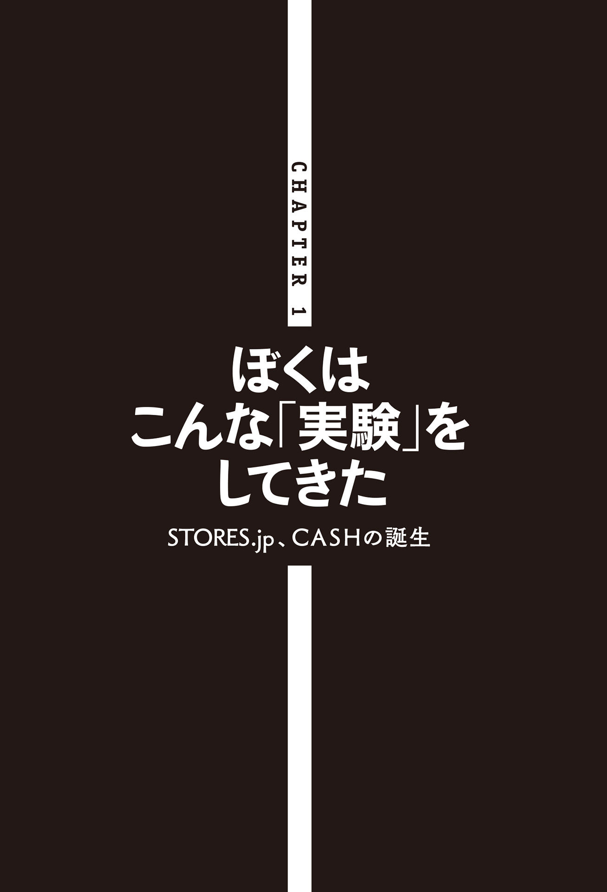
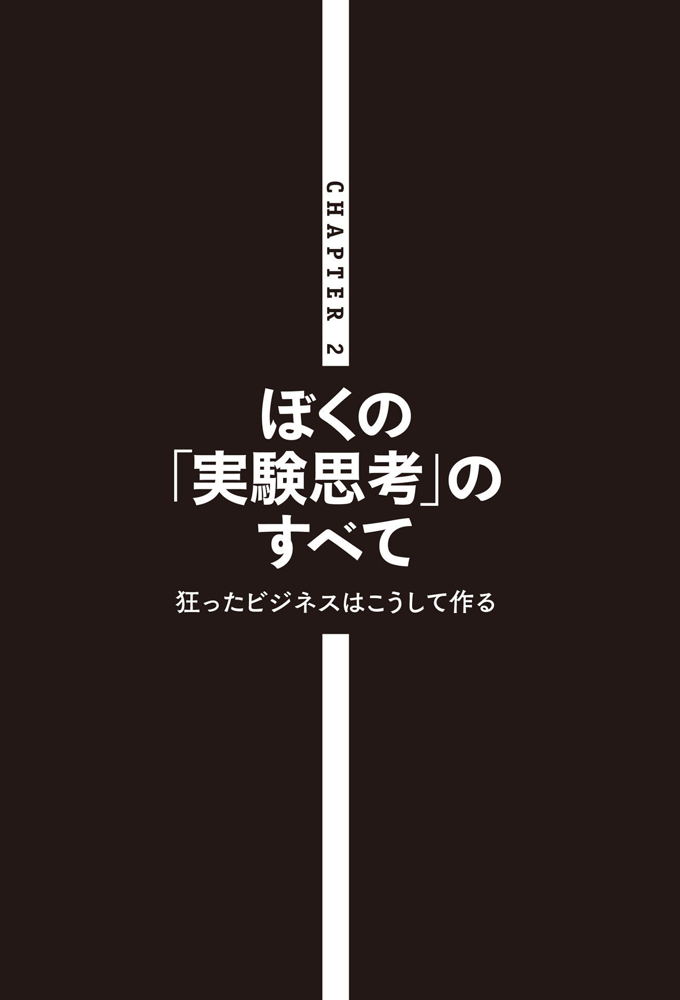
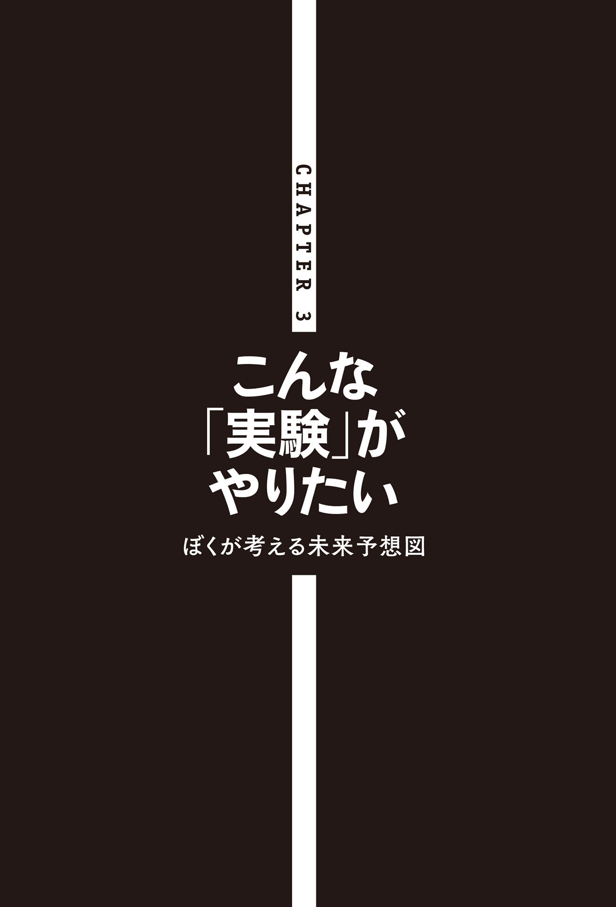
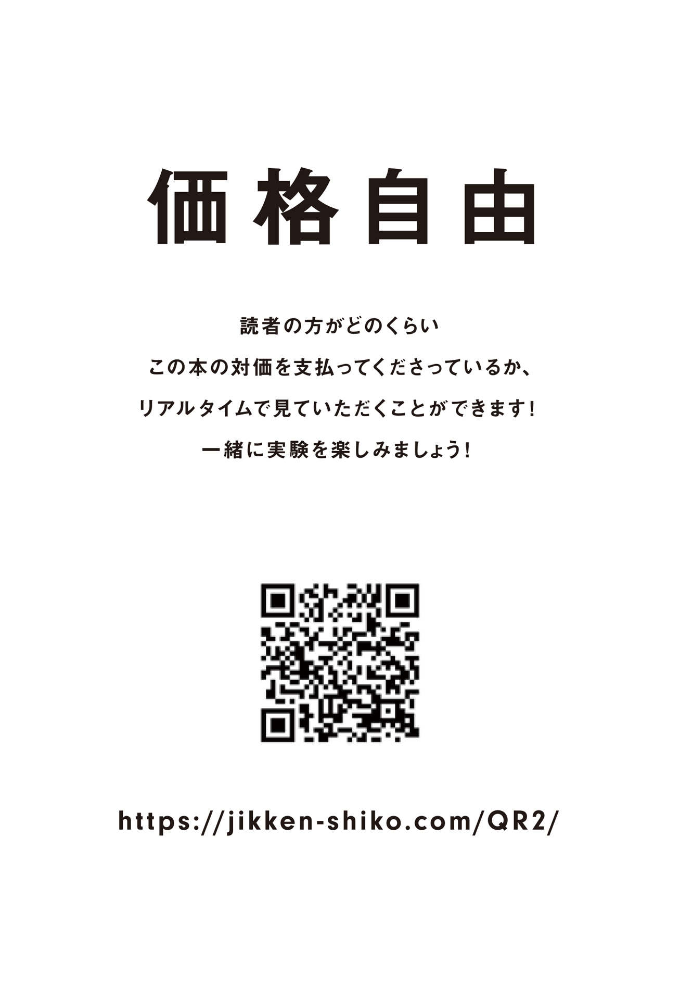

| 実験思考 世の中、すべては実験 (NewsPicks Book) | |
| 光本勇介 | |
| 株式会社幻冬舎 (2019) | |
幻冬舎
実験思考 世の中、すべては実験
光本勇介
はじめに ──すべてのビジネスは「実験」だ
ぼくにとって、すべてのビジネスは「実験」です。
自分の考えたアイデアや仮説を「世の中」というビーカーにぶち込んでみる。
そこでどんな「火花」が散るのか、「化学反応」が起きるのかを見たいのです。
そこでいままで誰も見たことのないものが生まれたり、誰もやっていないようなことが実現できたりしたら、シンプルにおもしろい。
「これをやったらどうなるんだろう？」「たしかにそれ、おもしろそうだよね」と多くの人が思いつつ、実現されていないことはたくさんあります。それを実際にやってみることにものすごく興味があるのです。
ぼくは起業家としていろんなビジネスをやっていますが、それによって「有名になりたい」とか「名前を売りたい」という思いは、正直あまりありません。
もちろん、実験が成功して、結果的にお金持ちになることはあるかもしれませんが、それよりも単純にその「実験の結果」をいち個人として見てみたいのです。
目の前のアイテムが一瞬でキャッシュに変わるアプリ
ぼくは２０１７年に「ＣＡＳＨ」というアプリを作りました。
簡単にいえば「目の前のアイテムが一瞬でキャッシュ（現金）に変わる」サービスです。
服でも、靴でも、バッグでも、そのアプリで写真を撮れば、その瞬間に金額が表示され、その額が口座に振り込まれます。
仕組みは「買取サービス」と同じなのですが、モノの写真を撮った瞬間に現金が振り込まれるのは、インパクトが大きかったのでしょう。リリースされると、ＳＮＳを中心に爆発的に話題になりました。
みんなが目の前のアイテムをキャッシュに変え始め、数時間でぼくらの会社からは３・６億円が飛んでいきました。あまりの人気でその日の深夜にサービスを休止せざるをえないほどでした。
なぜこのアプリを作ったのか？
それは「１億円をばら撒いたらどうなるかを知りたかった」からです。たとえばマンションの屋上から現金１億円を地上にばら撒いたときに、いったい何人がそれを自分の財布に入れるのか、いったい何人が屋上にいるぼくのところまでお金を届けに来てくれるのか、興味があった。
お金をばら撒いてみて世の中がどうなるかを実験したかった。ハックしたかった。違う景色が見てみたかったのです。「これをやると、どういう化学反応が起きるんだろう？」「どんな世の中になっちゃうんだろう？」という好奇心です。
ぼくのなかにはいろんなアイデアがあるけれど、他の人は誰もやってくれません。ぼくは行動することが好きなので、「だったら自分でやっちゃおう」と思ってやっているだけなのです。
実は、結果はそこまで重視していません。
みんなの前で実際にやってみて、どういう反応をするのか見てみたい。
その思いのほうが大きいのです。
「失敗」は自分だけの価値になる
「写真が送られてきただけでお金を振り込むなんて怖くないですか？」とよく聞かれます。
でも、ぼくは「成功したいから」やっているわけではありません。あくまで「実験」なのでぜんぜん怖くはないのです。
ＣＡＳＨの場合、最初の予算は１億円でした。
１万円を１万人にばら撒こうと思った。１万人にばら撒くことができれば、それなりのサンプル数になります。それを実行することで「世の中に１億円をばら撒いたら、どういうことが起こるのか」という結果が得られます。そして、その結果はものすごく価値のあるものです。
１億円によって「ぼくしか知らない情報」が手に入ります。
それによって単純に好奇心も満たされますし、次のビジネスにも活きる。あわよくば、それで自分の思っていたとおりのビジネスになったら、なおさら最高でしょう。
もちろん当てずっぽうに実験をしているわけではありません。
ぼくには「世の中の大きな方向性はこっちだ」という仮説があるし、「世の中はこういうものを求めるはずだ」という考えがあります。
もちろん「実験」である以上、失敗もあります。
ただ、失敗したとしても、それはいわば「プランＢ」です。プランＢとしての情報を得られるから、絶対に１億円が「ゼロ」になることはないのです。トライしているということは、他の誰かにとってもかならず価値のあるトライになっているはずです。失敗すら大きな価値なのです。
実験なら失敗しても納得できます。失敗も無駄ではなく、ひとつの「検証結果」になる。それはあきらかに「価値」なのです。
これは、半分冗談、半分本気ですが、「失敗しても、向こう３年は飲み会のネタになるな」と思っていました。「だったらいいか」と思って、やってしまったのです。
「実験思考」で生きればこんなに楽しい時代はない
ぼくは、ずっと実験をしていたいな、と思っています。
「売上が立ちました」「黒字転換しました」となれば、もちろんうれしいです。
ただ、みんなから「あのサービスって実際どうなの？」「ちゃんと儲かってるの？」と言われ始めているときに、また違うさらに大きな花火をぶち上げてみたい。誰も思いつかないことをドカーンとやることで、話題にしてもらう。
そんな「実験家」みたいな存在でいられたらいいな、と思っています。
一方でぼくは「マスのサービスを作りたい」と思っています。
なるべく多くの人に使ってもらえるようなメジャーなサービスです。
インターネットにかかわる会社をやっている以上は、死ぬまでには誰もが知っているようなサービスを作ってみたいと思っています。
ただ、それがそんなにパンクなことではなかったら、狂ったことではなかったら、ぼくとしてはなんか違います。「ああ、そういうのあるよね」と言われてしまうのは本当にイヤなのです。最悪、大失敗しても「新しいチャレンジだったね」と思われるほうがまだいいのです。
誰がやっても成功するような「ああ、なるほどね」と言われるようなビジネスには興味がない。多くの先人たちがやってきたことをなぞって、確実に儲かるようなことをしたところで楽しくありません。
ぼくは「狂ってる」と言われることが好きです。とてもうれしいと感じます。会社のパンフレットやＷＥＢサイトにも「狂ったことをしよう」「０か１００か振り切れ」と書いています。それがいちばんおもしろいからです。
本書は、そんなぼくがこれまでどんな「実験」をしてきたのか、そのいわば「実験思考」とはどういうものなのか、これからどんな「実験」をしてみたいのか、それらを余すことなく書きました。
いまは「先が見えない時代」「大変革の時代」などといわれます。チャレンジを恐れ、失敗を恐れて生きる人にとっては、恐怖の時代かもしれません。「明日はどうなるのだろう？」とビクビクしながら過ごさなくてはいけません。
でも「実験思考」で生きれば、こんなに楽しい時代はありません。変化の時代だからこそ、実験する人にとっては絶好のチャンスなのです。失敗すら成功へのひとつのプロセスに過ぎません。あくまで実験なのだから、仮説どおりにいかなくても、こっちの道ではないとわかった、というひとつの結果なのです。
事業も含め、世の中のすべてのことはやってみないとわからないことだらけです。それならば、とりあえず打席に立ち続け、バットを振りまくったほうがその経験から得られるものも多いですし、あわよくばヒットかホームランも生まれるかもしれない。大切なのは「とにかくやってみよう」の精神です。
本書によって、一人でも多くの人が「実験」をして、人生を遊び尽くすことができれば、ぼくにとっても最高です。
『実験思考』による実験 ─価格自由─
そして、今回は、本書『実験思考』そのものを使った、ある実験をすることにしてみました。
それは「本の価格を自由に読者に委ねてみたら、定価で売った場合より儲かるのか？」というものです。その名も、「価格自由」です。
通常、この手のビジネス書の定価は１５００円程度だそうです。しかし、『実験思考』は印刷に必要な原価の３９０円だけをいただき（電子版は印刷が必要ありませんので０円で販売させていただきます！）、本来の本の値段は読者の方が決めて、本の最後にあるＱＲコードから飛べるサイト経由でお支払いいただければと思います。
多くのコンテンツは先払いが基本になっています。ライブだって映画だって本だって、おもしろかったらおもしろかった分だけ払うようになってもいい気がします。１８００円の映画を観た後、５００円くらいしか価値を感じない場合もあれば、１万円、10 万円を払ってもいいようなときもあると思うのです。「価格自由」ですので、もちろん価値を感じなければ０円としてお支払いいただかなくても問題ありません。
当然、本を読んでいただいた後に誰もお支払いくださらないと、本が売れてもぼくはまったく儲かりません。売れなかった場合は、数千万円損をしてしまいますが、その分を読者の皆さんからの自由な価格でのお支払いで回収できるかの実験をしようと思っています。
皆さんからお支払いいただいているお金の総額はリアルタイムでＱＲコードから飛べるサイト上で公開させていただきます。
さらに、もうひとつの実験として、ぼくが本のお金を回収するだけではおもしろくないので、皆さんが払ってくださったお金の半分を、新たな実験に挑戦しようとする方にプレゼントさせていただきます。
そのお金は、ぜひ皆さんの実験に使ってください。
皆さんがやりたいと思ってもお金の問題でできないことをフルスイングでやってほしいと思います。
ぼくのこの『実験思考』を読んでいただければわかってもらえると思いますが、ぼくの行動原理はすべて実験です。
ぶっ飛んだことをやってみて、その結果を見てみたいのです。
皆さんもできるだけ、ぶっ飛んだこと、狂ったことを、失敗してもいいので実験してみてほしいと思います。
そうするとこの世界がもっとおもしろくなると思うのです。
実験するにしても、ある程度まとまったお金の方が良いと思うので、新たな実験に挑戦しようとする方に１００万円ずつお渡ししようと思っています。
たとえば皆さんから本のお金としていただいたお金が１０００万円集まった場合、その半分の５００万円をいわば実験費用として１００万円ずつ５名の方にプレゼントいたします。皆さんからお支払いいただく総額が増えれば増えるほど、実験費用を手にする人が増えるという仕組みです。
もし、あとで支払われる本の対価がまったく集まらなかったら......。
単純にぼくが損します（笑）。
しかし、たとえそうなっても、今回の実験結果が見られるならこの数千万円は決して高くはありません。なぜなら、ぼくにとって実験結果こそが唯一無二の財産だからです。
ぼくは普段、本を読みませんし、本を書くことにも興味がありませんでした。
編集者の箕輪さんから「本を書きませんか？」と言われたとき、狂った実験ができるのであれば書きたいです、とお答えしました。
この本の売り方がまったくハマらない場合もあるかもしれないし、でももしかしたら出版業界のビジネスモデルそのものがガラッと変わるかもしれない。
ぼくはただ、見たことのない景色を見たいのです。
それでは、『実験思考』による実験を始めます。
実験思考
目 次
◆ はじめに すべてのビジネスは「実験」だ
◆ 目の前のアイテムが一瞬でキャッシュに変わるアプリ
◆ 「失敗」は自分だけの価値になる
◆ 「実験思考」で生きればこんなに楽しい時代はない
◆ 『実験思考』による実験 ─価格自由─
ぼくはこんな「実験」をしてきた
STORES.jp、ＣＡＳＨの誕生
◆ 固定概念をすべて取っ払う
◆ 初めてインターネットを使ってお金を稼ぐ
◆ 翻訳のクラウドソーシング、留学の斡旋
◆ いきなり起業せずに就職した理由
◆ 外資系の広告代理店に入社
◆ 新卒採用がない会社に入社する戦略
◆ 20 通りのアドレスにメールを送る
◆ 広告代理店でアウディを担当
◆ 右肩上がりの「車を借りたい需要」
◆ 起業のネタに困ったことはない
◆ 早すぎたカーシェアリング
◆ 市場選択とタイミングがすべて
◆ 貯金残高２万円
◆ 「STORES.jp」の誕生
◆ 他のリリースと反応がぜんぜん違う
◆ 憧れの「テッククランチ」から取材依頼
◆ サービスの「選択」と「集中」
◆ ＺＯＺＯ前澤さんとの出会い
◆ やっぱり「起業家」として生きていきたい
◆ お金をテーマにサービスを作ろう
◆ お金は早く払うだけで喜んでもらえる
◆ 「お金をばら撒く」ビジネス
◆ ＣＡＳＨの誕生
◆ 24 時間で３・６億円をばら撒いた
◆ 翌朝、トラック３台分の荷物が届く
◆ 「ＣＡＳＨ」儲けのカラクリ
◆ 「すべての人を信じる」ビジネスをやりたい
◆ 「性善説」に基づいたサービス
◆ ＤＭＭによる買収
◆ ＤＭＭからの卒業
ぼくの「実験思考」のすべて
狂ったビジネスはこうして作る
◆ 社長は暇なほうがいい
◆ アイデアメモは「１軍」から「３軍」まで
◆ ビジネス感覚をどのように身につけたか
◆ 全力で「普通の生活」をする
◆ 違和感をスルーしない
◆ 不得意なことは任せて、得意なことに集中する
◆ クリエイティブなことだけを考える
◆ 「インターネットの人」にならない
◆ 合コンでモテるようなサービス
◆ 人の「いいね」も「悪いね」も信じない
◆ 事業は「タイミング」が命
◆ 「ズレが限界に達しそうな業界」を探す
◆ 大きな市場を見つける
◆ 旅行業界の「手数料ビジネス」を変える
◆ 無駄に見えるものも、視点を変えれば売りものになる
◆ 「覗き見市場」には需要がある
◆ 世の中は可能性だらけである
◆ 「表現」次第で市場は広がる
◆ ＣＡＳＨもただの「買取」アプリ
◆ 信頼しているデザイナーの存在
◆ 触って気持ちよくなければやめる
◆ いかに「世界観」を変えるか
◆ STORES.jpは「見せ方」の勝利
◆ いらないモノは極限まで「削る」
こんな「実験」がやりたい
ぼくが考える未来予想図
◆ これから世の中はどう変わるのか
◆ お金がすべてではなくなる
◆ 「価値のグーグル翻訳」を作る
◆ さまざまな業界でやってみたい「実験」
◆ がん検査をもっとカジュアルに
◆ セキュリティサービスをマス化する
◆ オーダーメイド業界はまだまだ伸びる
◆ 飲食・小売業界は、金融事業化すればさらに儲かる
◆ 給料先払いサービス「ＷＯＲＫ」
◆ 新しい形態の消費者金融
◆ 新幹線のワゴン販売をオフィスに展開
◆ ランチを無料にする実験
◆ 「思考停止」の時代になっていく
◆ 「衣食住」は無料になる
◆ エンタメが強くなる
◆ スポーツはなくなる
◆ 人間は「所有する人」と「所有しない人」に分かれる
◆ 「車の名義」という概念をなくす
◆ 「実験」しないともったいない！

固定概念をすべて取っ払う
ぼくは「固定概念」をすべて取っ払って考えます。
常識をいったん全部脇に置いて、「そもそも何でだっけ」と考えるのです。もしかしたら、最初から常識がないのかもしれませんが......。
ぼくは10 歳から18 歳までの８年間を海外で過ごしました。
父は東海大学の教授でした。その仕事の関係で、家族でデンマークに住んでいたのです。父はデンマークの日本人学校で中高生にスポーツを教え、ぼくは日本人学校には通わず、現地の学校に通っていました。
考え方、価値観、目線の高さなど、いまの自分の基盤は、この海外にいた時期に作られました。
デンマークに来てから４年経ったときに、家族で日本に帰国することになりました。そのとき父親は14 歳のぼくに対して「帰ることになったけど、一緒に日本に帰るか？ それとも一人でヨーロッパに残るか？」と言いました。
中学３年生だったので、日本に帰ったら確実に高校受験が待っています。小学５年生から日本にいないので、日本のカリキュラムからはだいぶ遅れている。漢字も書けなくなっていました。
一方で当時は、ちょうどインターナショナルスクールに通い、英語の勉強をし始めたところでした。それも中途半端だったので、「ならば一人でこのままヨーロッパに残ったほうがいいんじゃないか」と思いました。そこでぼくは一人でヨーロッパに残ることにしたのです。
海外生活の後半４年、14 歳から18 歳までは、親と離れてぼく一人でイギリスの学校の寮に住んでいました。
日本人がまわりに少ししかいないなかで、普通に高校生活を送りました。
そのときにインターネットに出合って、インターネットの可能性やおもしろさをすごく感じました。
初めてインターネットを使ってお金を稼ぐ
イギリスの高校では、夏休みが３ヶ月あります。
その３ヶ月は日本に帰るのですが、日本に友だちがいるわけでもなく、そのあいだ暇でした。
たいていの人は夏休みにアルバイトなどをすると思いますが、ぼくは毎朝５時に起きて原宿に通っていました。神奈川の大磯という海沿いに住んでいたのですが、２時間くらいかけて電車で原宿に行っていたのです。
当時は、A BATHING APE（エイプ）やUNDERCOVERなど「裏原」のブランドがものすごいブームでした。いまでこそインターネットが普及して、いろんなブランドがすぐに手に入りますが、その時代は原宿でしか買えませんでした。
そこでぼくは、朝の７時半ごろからエイプなどのお店の前に並びます。４時間くらい行列に並んで12 時にオープン。オープンしたら１枚５０００円のＴシャツを５枚くらい、２万５０００円ぶん買う。そして５分で店を出て、速攻で家に戻るのです。
14 時くらいに家に帰ってインターネットにつなぎます。
当時はヤフオクも楽天もありません。ぼくは「ＢＢＳ」という「２ちゃんねる」のような電子掲示板に、それらの商品情報を載せて購入希望者を募りました。ネット回線が重たくて画像は貼ることができなかったので「胸のあたりに猿の顔がある青のＴシャツ Ｍサイズ」といったように柄やサイズを文字で打ち込むのです。
「買います」と言ってくれた人とメールでやり取りし、「商談」がまとまると商品を郵送するために郵便局に行く。毎日のように郵便局に通っていたので、親も不思議に思っていたかもしれません。
購入した５枚のＴシャツに、１枚あたり２万円を上乗せして売っていたので、１日10 万円くらいの利益になりました。毎日、原宿に通っては商品を発送し、高校生ながら毎月１５０万円くらいは稼いでいた記憶があります。
テレビでキムタクが着たＴシャツを売ったり、フリーマーケットの雑誌に広告を出したり、購入者にダイレクトメールを送ったり、工夫次第で売上が変動しました。会ったこともない人が買ってくれるというのは、いまは普通ですが、当時はすごく新鮮でした。モノを売る経験がおもしろくて、シンプルに「インターネットってすごいな」と思っていました。
翻訳のクラウドソーシング、留学の斡旋
日本に帰ってきて大学生になると今度は、いまでいう「翻訳のクラウドソーシング」のようなことをやりました。日本中の翻訳者をインターネットでリスト化したのです。
インターネットが普及する前、地方には「手に職はあるけれど、手を余らせている人」がたくさんいました。
そこでぼくは、翻訳者が集まるインターネットの掲示板に「翻訳の仕事あげます」「仕事が欲しい人はここにメールをください」と書き込みました。すると、みんな仕事が欲しいのでものすごくメールが来ます。そして、会ったこともない１００人くらいの名前、ＴＯＥＩＣの点数、翻訳歴などをエクセルを使ってデータベース化していきました。
一方でホームページを作ります。個人なのですが、あたかも「立派な翻訳会社」みたいなホームページを作るのです。
いまでこそ企業でホームページを持つのはあたりまえですが、そのころの企業はホームページなんてまったく持っていませんでした。よってそのホームページを作っただけで、「翻訳」と検索するとそのページがいちばん上に来るのです。すると、びっくりするくらいの大企業から、びっくりするくらいの規模の翻訳の依頼が来るようになりました。
ぼくはその大きな案件を15 分割、20 分割して、会ったこともない20 人ほどに「１週間後によろしく」と言ってそれぞれのパートを割り振ります。１週間後にみんなが翻訳してきたものを頭から「がっちゃんこ」して、その企業に納品するのです。５００万円で受けた案件を３００万円で発注して２００万円儲ける、といったことをしていました。いまでいう「クラウドソーシング」を大学生のころにやっていたのです。
留学の
当時は留学する人は少なかったのですが、これからどんどん増えていくだろうと考えていました。
多くの人は「留学したい」と思ったときに、何をしたらいいのかわかりません。誰に相談すればいいのかもわからないし、当時はいまみたいに情報が出回っていない。
そこでホームページを作って、そこに30 人くらいの留学経験者を「コンサルタント」として並べたのです。留学経験者に相談するのがいちばん安心できるし需要があると思ったのです。「この人たちに相談できて、留学もオーダーできる」というサイトを作って、20 ％くらいを乗せて留学の手配を請け負ったりもしていました。留学は「商品単価」も高いので、結構儲けることができました。
いきなり起業せずに就職した理由
大学生のときは、そういった翻訳や留学のサービスで稼いでいました。
大学を卒業するころ、ちょうど「起業ブーム」が起きました。渋谷が「ビットバレー」と呼ばれるようになったころです。
ライブドア創業者の堀江貴文さんやサイバーエージェントの藤田晋さんなどの有名な起業家にすごく憧れました。ライブドアによるフジテレビの買収騒動もテレビで見ていました。インターネットで大きなビジネスをしている起業家はカッコいいとシンプルに思いました。
ぼくが影響を受けた起業家の一人は藤田晋さんです。藤田さんの著書『渋谷ではたらく社長の告白』を初めて読んだときは胸が震えました。
ぼくも起業する気まんまんでした。すでに一般的な初任給よりも稼いでいましたので、いまから普通の会社員として働くのもなんか違うなと思っていました。
起業しようと思って、いろんなコミュニティやイベントに顔を出すなかで、ある上場企業の社長に「ランチをご一緒させてください」とお願いしたことがありました。返事はＯＫでした。いま考えると、上場企業の社長がいち学生のために時間を割いてくださって、すごくありがたいことでした。
ランチのとき、ぼくは意気揚々と「起業しようと思うんです」と話をしました。すると社長はこう言いました。
「たしかにこのまま卒業して起業するのは、あらゆるものをショートカットできるからすごくいいと思う。だけど、起業したら大きな企業とも取引することになる。取引相手の大企業の仕事の仕方や中身を知っているのと知らないのとではぜんぜん違うよ。
だから、一度そういう大きな会社に入って、２～３年学んでから起業するのも価値があるし、遅くもないと思う」
それを聞いてぼくは「たしかにそうだな」と思いました。なぜなら、その時期まさにそれを痛感していたからです。
学生なりに翻訳会社のふりをして大企業から大きな案件をもらっても、ビジネスメールの書き方も、請求書や見積もりの書き方もわからない。電話のときの話し方もわかりません。ビジネスはできても、社会人としての振る舞いがわからず、仕事を落とすこともありました。
「このまま起業しても、一生誰も教えてくれないかもしれない」と思ったときに、いつか大きなビジネスをやりたいのだから、大きな会社のことを知っておいたほうがいいと思ったのです。
外資系の広告代理店に入社
そこでまずは就職することにしました。
会社を選ぶときに考えたのが、いろんな会社のいろんなビジネスを「
たとえばコンサルティング会社や金融会社などは、いろんな会社の中身が見えます。そういうところがいいと思ったのです。一方で、クリエイティブとかデザインも好きでした。
そこでぼくは、外資系の広告代理店「オグルヴィ・アンド・メイザー・ジャパン」に入社しました。世界で２～３番めに大きな広告代理店です。
なぜ外資だったのか。
日本の広告会社の仕事はいわゆる「メディア売り」です。メディアの枠を売って、手数料から利益を得る。ようするに、広告スペースの不動産屋さんです。
一方、海外の広告会社はマーケティングの色が濃い。メディアを持っていないので、弁護士みたいに「時間を売る」ような仕事です。よって、よりピュアに「お客さんのビジネスのためのマーケティング」という観点で、その事業に携わることができる。メディアは広告会社が選びます。
そういう違いがあるので、広告会社に入るのなら外資のほうがいいと思ったのです。
入社すると、思ったとおりに「今日はミネラルウォーターの会社」「今日は飛行機会社」「今日は自動車会社」といったぐあいに、いろんな会社のビジネスに携われたので、めちゃくちゃ楽しかったです。
「この会社はこうやって儲けてるんだ」ということがわかって、ものすごくおもしろかった。その会社では３～４年働きました。
新卒採用がない会社に入社する戦略
ちなみにぼくが入った会社は外資系だったこともあり、新卒を採用していませんでした。
でもどうしてもそこがよかった。他の会社も試しに受けてみたのですが、「やっぱりここじゃないとイヤだ」と思いました。
ぼくは新卒を募集していないことを承知で、勝手に履歴書を送りました。案の定、７回くらい断られました。最初の３回くらいは人事から「募集していません」と普通にメールで断られました。それでもあきらめきれず、その後３～４回は、人事に直接履歴書を持っていったり、送ったりしました。それでもバンバン断られる。
最後は「社長と話すのがいちばん手っ取り早い」と思い、社長に直接アプローチすることにしました。
その時点でもう７回くらい履歴書を提出していたので、人事には顔を覚えられています。でも、社長までは履歴書は届いていないはず。そこで、履歴書を持って、あたかも社長とアポがあるかのように会社の受付に出向いたのです。
受付の女性はさすがにぼくの顔を知らないので、社長のスケジュールを調べたり、呼び出したりしてくれます。
そのときは社長が外出していたので、「いま不在なんですけど」と受付の女性が言ってきました。ぼくは「あれ、おかしいな？ アポとってるのに」といったそぶりをして、「これを持ってこいと言われたので、渡しておいていただけますか」と履歴書を渡しました。受付の女性は、社長に「持ってこい」と言われて持ってきたものなら絶対に渡すはずだからです。
20 通りのアドレスにメールを送る
そのように履歴書を社長に届けることには成功したのですが、それだけだと社長が受け取ったときに、ポカンとしてしまうでしょう。そこで「こういう理由で渡した」ということをきちんと社長に伝えなければと思いました。
そこで社長にメールを出そうと思ったのですが、アドレスは当然知りません。ただ、アドレスなんてパターンが決まっています。そのときの社長はイギリス人でしたが、その人の名字と名前のコンビネーションで20 通りくらいアドレスを作って送りました。
「突然伺ってしまい、本当に申し訳ありません。ただ、どうしても御社で働きたくて、履歴書を持ってきてしまいました。最初はタダ働きでもいいので、面接だけでもしてください」
そういう主旨のお願いのメールを書いて、20 パターンのアドレスに送ったのです。すると、19 通が返ってきました。そう、１通届いたのです。次の日、人事から面接の連絡が来て、ぼくはその会社に入れることになりました。
入社してからものすごく働きました。労働時間でいうと人生でいちばん働いていたでしょう。家にもほとんど帰らない。だけど、毎日楽しくてしょうがなかったのです。
外資なので、仕事ができたら評価してくれます。お金もたくさんもらっていました。自分のチームも20 人くらいになりました。最後のクライアント、アウディのときの予算数十億円は、ぼくがほぼ一人で回すほどでした。
広告代理店でアウディを担当
前述のとおり、ぼくがその広告代理店で最後に担当していたのがアウディという車の会社でした。年間数十億円くらいの予算を預かって、さまざまなマーケティングや広告キャンペーンを行なっていました。
しかしリーマンショックが起きて、びっくりするくらい車が売れなくなりました。アウディだけではなく、日本の企業も含めて、車全般が売れなくなったのです。どの会社も「前年比50 ％減」というような事態になりました。これは大変な状況です。
アウディも他の自動車会社も「車が売れない」と大騒ぎになりました。ただぼくは客観的に「そうか、車が売れなくてそんなに大変なんだ」といち広告営業マンとして眺めていたのです。
ぼくは「そもそも日本に、どれだけの車があるんだろう？」と思い、改めて調べてみました。マーケティング会社なので手元にはいろんな情報や数字もあります。すると日本には、自家用乗用車が約６０００万台もあることがわかったのです。めちゃくちゃあるとわかった。そのとき「こんなにあるのなら、もう売らなくてもいいじゃん」と思いました。
日本の人口は当時、子どもやシニアの方も入れて約１億２０００万人です。それに対して車が約６０００万台もある。車を運転できる人は、ほぼ一人１台持っているくらいの計算になります。
その車が利用されているのならまだわかります。しかし、１日24 時間を１００％としたときに、車が利用されている「稼働率」は平均３％程度だということもわかりました。
つまり車は、24 時間のうち約97 ％は駐車場に置かれている。約97 ％はほぼ動いていない。ほぼ動いていない車が日本に約６０００万台もあることを知ったのです。
右肩上がりの「車を借りたい需要」
日本中に有効活用できるはずの車約６０００万台が「在庫」としてある。
ぼくは新たに車を売るよりも、これを活用したほうがいいと考えました。「この車を活用したい人って誰なんだろう？」と考えたときに、「答えは車を借りたい人だ」と思いました。
そこで「レンタカーの市場」を調べてみました。
実はレンタカーの市場はリーマンショックのタイミングも含めてずっと右肩上がりになっていました。借りたい人の需要は増えている。「車を買うのはハードルが高いので、借りたい」という人は増えているわけです。
車を借りたい需要があって、余っている車がこんなにある。ということは、車を持っている人が「貸してもいいよ」とさえ言ってくれれば、借りたい人たちは絶対に車を借りるだろうと思いました。しかもそれが、レンタカーの半額で借りられるとしたら勝算はあるはずです。
そこでぼくはインターネットでアンケートをとりました。いまとなっては、そんなネットリサーチなんて誰も信じませんが、10 年前に１回だけ、たしか５０００人くらいの車を持っている人にこう聞いたことがあります。
「乗っていないときにお金がもらえるのなら、あなたの車を貸してもいいと思いますか？」。すると、約20 ％の人が「貸してもいい」と答えました。
これを少ないと見るか多いと見るかですが、ぼくはめちゃくちゃ多いと感じました。５人に１人は貸してもいいと思っている。約６０００万台の20 ％といえば１０００万台以上あります。レンタカー利用代金の平均は１万２０００円くらいですが、仮に年に１回だけ半額の６０００円で貸したとしても、それだけでかなりの市場規模になるのです。
起業するなら、この「カーシェアリング」だ、と確信しました。
ここで「実験」してみようと思ったのです。
起業のネタに困ったことはない
もともと「いずれ起業しよう」と思って就職したので、会社でいろんなクライアントと仕事しつつも、つねに自分の起業のネタを探していました。起業のアイデアはどんどん溜まっていきました。
最後は前述したような経緯で「カーシェアリングサービスならイケる！」と思って、起業しました。
そのころからずっと、起業のネタに困ったことはありません。後は「いつやるか」だけです。
ぼくはずっと「起業のネタ帳」を書いています。クライアントと打ち合わせをしながらも「こういう市場なら、ここに絶対需要あるじゃん」と思ってネタ帳に書く、ということが習慣になっていました。
ぼくはビジネスの仕組みを考えるのが好きです。ジャンルは究極的にはなんでもいいのです。不動産業界でもいいし、理容業界でもいい。「血液を売りたい」と思ったこともあります。献血していたときに「あれ？ 血ってなんで売ってないんだろう？」「血って売れないのかな？」と思ったのです。
「この業界ならぼくはこういうことをやりたいな」というのが、あらゆる業界にあります。それを考えることが好きで、実験してみることが好きなのです。
早すぎたカーシェアリング
さて、そういうわけで「ブラケット」という会社を設立しました。
事業はカーシェアリングのサービスです。10 年前にぼくらは、カーシェアリングのサービスを日本で最初にやったのです。ただ結果からいえば、早すぎました。
しかも「Ｂto Ｃ 企業が個人に貸す」ならまだしも「Ｃto Ｃ 個人が個人に貸す」カーシェアリングサービスをやっていたのです。
いまだったら、理解してもらえるでしょう。Airbnbもありますし、「個人間で車を貸し借りします」と言えばわかる。いまの価値観やトレンドならみんな理解してくれるでしょうが、これは10 年前の話です。
「自分の車を、使っていないときに他人に貸すサービスなんです」と言っても、「自分の大切な車を他人に貸すわけないじゃん」「そんなの成り立つわけないじゃん、バカ」と言われるのがオチでした。
10 年前は、ＳＮＳもろくにない時代なのです。そんなときに「ソーシャルのカーシェアリングサービスです」というプレスリリースを出した。ほぼ誰も理解してくれませんでした。
「絶対に需要はある」という自信はありました。だから「カーシェアリングサービスをやろう」と思って起業したのですが、さすがに早すぎました。
市場選択とタイミングがすべて
当時は「車を借りたい」と思ったとき、レンタカーしかありませんでした。でも、そのサービスが普及すれば、車を借りたいときに「レンタカー」にするか「個人から借りる」かという選択ができます。
これが「世の中が変わる」ということであり「新しい市場ができる」ということです。それを自分の手でやることに興味があるのです。カーシェアリングは早すぎたのですが、ぼくを動かしているのは、こうしたやり方で「世の中を変えてみたい」という思いです。
ぼくがやってきた事業は、全部タイミングが早いのです。
個人どうしで車を貸し借りするなんて、当時は非常識でした。
自分だけのシューズが作れるサービス、自分だけのワンピースが作れるサービスなどもやりましたが、それもそこまで爆発しませんでした。
いまになってやっと「カスタマイズの時代」などといわれるようになりました。既存のアイテムを買って無理やり自分に合わせるよりも、自分が欲しいモノを欲しいタイミングで、自分が好きなように買うような世の中になるべきだと思って作っていたのですが、それは、いま起きていることなのです。
当時は「早すぎる」とは思っていませんでした。ぼくもやってみて初めて気づいたのです。
大切なのは「市場選択」と「タイミング」だとわかりました。最近は、半歩手前くらいのタイミングでものごとが考えられるようになってきたように思います。
貯金残高２万円
起業してからは、自分の貯金を会社に回していましたが、自分が思っていた以上のスピードでお金がなくなっていきました。
個人で「おこづかい稼ぎ」をしていたころは、固定費がありませんでした。しかし、会社としてオフィスを構え、社員を雇い、本格的にインターネットの事業を始めるとぜんぜん違ったのです。「お金ってこんなに早くなくなるんだ」と痛感しました。
そこで「お金を調達する」というオプションも考えたのですが、そのときはリーマンショックの直後。そもそもＶＣ（ベンチャーキャピタル）から調達するのは現実的ではありませんでした。どのＶＣも慎重になっていて、出資してくれなかったのです。よって、自己資本でやらざるをえませんでした。
ブラケットでは、起業当初から５つのサービスをやっていました。その理由は「思い立ったらすぐに実験してみたいから」です。
ぼくがいちばん嫌いなのが、「あのときあれをやっていたら、どうなっていたんだろう？」と後悔することです。似たようなサービスが出て、うまくいったら「自分がやりたかったのに」と思ってしまいます。
ぼくは、やって失敗するのは、問題ない。やらずに後悔することの１００倍いい。しかも、失敗から得られるものは、成功から得られるものよりも多い。とにかく、やっちゃったほうがいいのです。
それに「とにかく稼がなきゃいけない」という状況もありました。ひとつの事業で全部をまかなえるのが理想ですが、ひとつの事業では食べていけなかった。そこで３つ、４つ、５つと増やして「Ａというサービスでちょっと稼いで、Ｂというサービスでちょっと稼いで」というように、会社全体の売上をまかなっていたのです。
会社をやり始めて、貯金残高が２万円になったことがあります。
ただ、そのときも焦りはありませんでした。
「自分はビジネスが得意なんだから、経営がうまくいかなくても、また個人で稼げばいい」と考えていました。そう開き直っていたので、何をするのにも思いっきりできたのです。
学生のころからＴシャツ販売をしたり、留学の斡旋をしたりして「お金儲け」は得意だという自負がありました。いざとなったら稼げるし、ダメなら会社員に戻ればいいだけです。絶対に食いっぱぐれない。そういう自信がありました。
食いっぱぐれることは絶対にない。ならば、いまできることを全力でやりきろうと思いました。「すべては実験だ」と思って、楽しんでやっていたのです。
ただ一方で「これで失敗したら起業家として大成しないんじゃないか？」という不安はありました。
起業してからは何年もずっと「低空飛行」でした。やっぱり「みんなが使ってくれるサービスを作りたい」という思いがありました。だから、しばらくは本当に「でっかい海に石を投げている」ような感覚でした。正解もわからないし、「いつまでこれをやるんだろう」と思っていた。手応えのなさがずっとあったのです。
そのときの自分を支えていたものは、「とにかく、踏み出しちゃったから続けてみよう」という思いでした。
いまもいろんな起業家と会いますが、当時のぼくのような人がたくさんいます。ただ、あのときといまでは圧倒的に「調達環境」が違います。いまはお金をすぐに調達できるので、きちんと自分に対してもお給料が出せます。
投資もしやすいので、いまのほうが環境がいい。起業への理解もあるし、奇抜なサービスでも「いいじゃん、これ」と言ってくれる人は昔よりも圧倒的に多い。「なんじゃ、これ」というようなものがうまくいった例が多く出てきたから、「わからないものにこそ価値がある」というような空気になっています。
昔は「意味がわからないものは、意味がわからないまま」展開しなければいけなかった。いまは意味がわからなくても、市場予測や未来の見方次第では、むしろお金が集まってきて「噓から出た
「STORES.jp」の誕生
貯金が２万円まで減ったころ、STORES.jpが軌道に乗り始めました。ただ、これはそもそもブレイクさせようと思っていたサービスではありませんでした。
そのころは低空飛行に慣れすぎて、食べていくため、日銭を稼ぐために「もうひとつ事業を作ろう」と思っていました。ビジネスをポコポコ作らないとダメだと思ったのです。だから「５万でも10 万でも稼げればいいや」くらいのイメージだったのです。
STORES.jpの当初の営業目標の資料を見ると、本当に鼻で笑っちゃうくらい。利益目標は月20 万円ほどでした。
利益目標が20 万円だと「食べていけないじゃないか」と思われるかもしれませんが、他の事業でも稼いでいたのと、「さらにこのサービスで利益が20 万出たら、追加で一人雇えるな」と思っていました。
当時、社内にはぼくを含めて５人しかいませんでした。社員は４人でそのうち２人は新卒の子です。新卒を採用した理由は明快です。いちばん給料が安いからです。すでに市場に出ている人は高すぎて雇えません。思えば、新卒で当時のぼくの会社に入るなんて、相当なチャレンジャーだなと思います。
起業してからちょっとずつ人は増えていきましたが、しばらくはその数人とぼくで会社をやっていました。それでも人手が足りなかった。しばらくは「人を雇うために売上を立てよう」といった状況でした。
STORES.jpが５つめのサービスでしたが、そのとき、５つのサービスを５人で回していました。いま考えるとおかしい話です。カーシェアリングなどの、ものすごくコストがかかることをやっていたのに、一人１サービスを回していたのです。当然お客さんからの電話応対などは手が足りず、問い合わせはすべてメールにしていました。
他のリリースと反応がぜんぜん違う
STORES.jpができたのは、こんな経緯です。
ぼくは「インターネットの会社」をやっていたので、友だちや親戚から「これをネットで売ってみたいからネットショップを作ってほしい」という相談を受けることがよくありました。ただ当時は３～４人で４つのサービスを回していたので、ネットショップを作ってあげたいのだけれど、めちゃくちゃ忙しくてできなかったのです。
ネットショップを一から作るのは意外とめんどくさいのです。システムをカスタマイズしなければいけなかったり、デザイナーに依頼しなければいけなかったり、カード会社と契約しなきゃいけなかったり。とにかく時間とお金と労力がかかって、めんどくさい。
だから、片手間で作ってあげることはできません。でも、その思いには応えてあげたい。そこで「これを使えばすぐ作れるよ」と言って紹介できるようなサービスがあったらいいのに、と思ったのです。ブログを立ち上げる感覚でお店が作れたらいいと思った。
お店を作ってあげるのではなく、すぐにお店が作れるサービスを作れば需要があるはずだ。そうやってできたのがこのサービスなのです。
STORES.jpを世に出すと、これまでの４つのサービスとはあきらかに感触が違いました。すぐに世の中が騒いでくれた。リリースした数分後には「これは違う！」と気づきました。
当時はツイッターをやり始めている人も多かったので、「自分の店を持てるらしいよ」ということで、たくさんリツイートされました。これは確実にいままでと感触が違う。「ぼくたちが作りたかった反響ってこういうことだ」と思いました。こういう事業を作りたくて、みんなに「すげー！」と思ってもらいたくて起業したことを思い出したのです。
「すげー！」と思ってもらえるということは、それだけ需要があるということ。便利で、世の中を変えていると思ってくれているからこそ、騒いでくれるわけです。「やっと価値あるものを世に出せた」と思いました。
アドレナリンが出て、カタルシスの感覚がありました。起業家としての成功体験はあれが最初です。超気持ちいいと思った。しかも、ＣＭでごり押ししたわけでもなく、ひとつのサービスをポツンと出したら世界がバッと変わった。特別なテクノロジーを開発したわけでもなく、見せ方によって世界を変えることができたのです。
憧れの「テッククランチ」から取材依頼
このサービスをリリースしたのはいまから６年半前の２０１２年。６～７年前といっても、インターネットの世界での話なので相当「昔」です。当時はガラケーが主流で、iPhoneを持っている人はまだちらほらいたくらいでした。
低空飛行だったとき、他の起業家に嫉妬することもありました。サービスで世界を変えていける人がすごくうらやましかった。ひとつの事業で、ひとつのサービスで食べていける人がとにかくうらやましかったのです。ぼくはいろんなサービスをやらなくてはいけなかったので、とにかく主軸が欲しいと思っていました。
「テッククランチ」というアメリカのメディアがあって、ぼくはそこに出るのが夢でした。インターネットにかかわる人たちが全員見るくらいのメジャーなメディアです。インターネット業界で起業したからには、一度は取り上げられないとダメだと思っていました。
念願のテッククランチに載ることができたのは、STORES.jpを出して半年後くらい。取材の連絡が来たときに「やっとここまで来たか」と感動しました。「あの憧れのメディアに、やっとテッククランチに出られる日が来たのか」とめちゃくちゃうれしかったのを覚えています。
サービスの「選択」と「集中」
STORES.jpが当たるとすぐに「これに集中しよう」と思いました。
当時やっていたシューズやワンピース、モデルのマッチングサービス、カーシェアリングサービスは、半分やめて半分は売りました。
「シェアのサービスがこれから来そうだ」「この市場ってでかいよね」という思いもあったのですが、それ以上にSTORES.jpが好調だったのです。
ぼくは「中途半端にいろいろサービスをやるよりも、ひとつにリソースをさいたほうがいい」と判断しました。
ここ数年でやっと、UberやAirbnbなどのシェアリング系のサービスが認められてきました。「この概念って価値があるよね」という空気が世の中にじわじわ浸透してきたのです。「やっとぼくらのサービスが理解してもらえた」と思っています。そして「ビジネスは一夜にしていきなりできあがるものではないんだな」と痛感しました。
ＺＯＺＯ前澤さんとの出会い
ＺＯＺＯの前澤友作さんとの出会いは８年前です。
ブラケットでは、ワンピースやシューズのサービスの前に、モデルのマッチングサービスをやっていました。それが２つめのサービスなのですが、そのサイトを前澤さんが見つけてくれたのです。ＺＯＺＯは当時、上場して数年経ったころでイケイケのときでした。
モデルのマッチングサービスのプレスリリースを出すとすぐに、問い合わせフォームから前澤さんが「一度会いませんか？」と連絡してきたのです。ＺＯＺＯはもちろん知っていました。でも「まさかあの前澤さんじゃないよね」と思いました。でもドメインを見ると「スタートトゥデイ（当時の社名）」となっている。
会いに行くと前澤さんは「おもしろいサービスだね」と言ってくれて、そこから１年に１回くらいご飯に誘ってくださるようになりました。
前澤さんからはいつも突然連絡が来るのですが、STORES.jpを出したときも、「おもしろいじゃん」「簡単にサイト作れるじゃん」と言ってくれました。そして「ＺＯＺＯに出店しているブランドでＥＣサイトを持っていないブランドもたくさんあるから、そこにＥＣサイトを紹介する業務提携をしない？」と言われたのです。
最初は普通の業務提携で「ＺＯＺＯがSTORES.jpを紹介する」という話でした。
一方でそのとき、ぼくたちは「資金調達をしよう」と思っていました。ちょうど競合も出てきていたからです。あのヤフーも無料化を打ち出してきて、「第二ＥＣ戦国時代」などといわれていました。
競合が何億円というお金を調達しているなか、ぼくらは自己資本でやっていたのでぜんぜんお金がありませんでした。さすがに「つぶされる」と思って、資金調達をしようとしていたのです。
そのタイミングでちょうど前澤さんに会ったのです。
そこでぼくは、「業務提携というよりも、出資してもらえませんか？ もっとがっつりやりませんか？」と言いました。
すると前澤さんは「えっ？ 資金調達するつもりあるんだ」と言います。ぼくが何年も前からずっと自分のお金でやってきていたことを前澤さんは知っていたので、「お金を外部から入れていいんだ」と少し驚いているようでした。「だったら１００％で買収させてよ」とその場で言われました。今後の事業成長のためにも即決しました。
すごくよく覚えているのですが、その日は土曜日でした。
スケジュールが合わなくて土曜日に千葉・幕張で会って、昼にそういう話をして、日曜日にはＭ＆Ａが決まっていました。ぼくは１００％株主だったので、お互いすぐに決断できたのです。
やっぱり「起業家」として生きていきたい
ＺＯＺＯに買収されてからは他のサービスのことは考えず、ずっとSTORES.jpをやっていました。このサービスを日本一、世界一のＥＣプラットフォームにしようという思いがあったからです。
ＺＯＺＯのグループには、３年くらいいました。そのあいだ数字も実感としても順調に成長していきました。事業規模も、利益も、売上も、ユーザー数も、ほぼすべての数値が３年間で10 倍くらいになりました。「このまま行けば大丈夫だろう」というレベルになったのです。
ぼくはＺＯＺＯで前澤さんを近くで見ていて、「やっぱりぼくも自分の手でＺＯＺＯＴＯＷＮのようなマスのサービスを作ってみたい」と思うようになりました。再び「起業家としてマスのサービスを生み出すチャレンジを再びしてみたい」と決意して、ＺＯＺＯを離れることにしました。
STORES.jpはちゃんと成長していて、利益も出せていたのですが、「ストック型」のビジネスなのです。ちょっとずつ店舗が増えていってストックしていくものです。一夜にして爆発するようなものではない。だから、これをでっかいサービスにしていくためには、結構な時間がかかります。ゆっくり育てていって、気づけば大きくなっているようなサービスなのです。
一方ぼくが持っているいちばん価値があるものは「時間」です。この時間を有効活用して、マスのサービスを生み出すチャレンジをしたい。STORES.jpを育てていくのは、もはやぼくよりも得意な人がいましたので、任せることにしました。その人はぼくと一緒にSTORES.jpができるはるか前からがんばってきてくれた塚原文奈です。そしてぼくは「新しい事業を作る打席に立つ」という選択をしたのです。
ＺＯＺＯをやめると決断したとき、次のサービスの構想はありませんでした。何をやるかは決まっていなかった。ただ、何か新しいことをやろうと思っていたのです。焦っても出てこないので、「何をやろうかな」「どんな実験をしようかな」と半年くらいふらふらしていました。
事業は「市場選択」と「タイミング」が大切だということを過去の経験から学びました。なんでもよければいつでも事業をスタートできたと思いますが、「このタイミングでやるべき事業は何か？」というのを、いろんな市場を全部見てから自分なりに選ぼうと思っていたのです。ゆっくり市場を調べたり、いろんな人とご飯を食べて話を聞いたり、興味がある領域の本をアマゾンで買いまくって読んだりして過ごしました。
お金をテーマにサービスを作ろう
「いま、このタイミングでどんなテーマでビジネスをやるべきなのか......」
そうして出てきたテーマが「お金」でした。「お金というテーマはいま、すごくおもしろい」と思ったわけです。
結局世の中は「経済」で成り立っています。「お金」で動いている。「モノやサービスを手に入れるにはお金が必要」という部分がどうしてもあります。お金を稼がないと何もできないし、お金は絶対的に必要なものです。
しかもいまは、仮想通貨や電子マネーなど「お金」の概念が劇的に変わってきている。そんななかで「お金」をテーマにビジネスをするのがいちばんおもしろいのではないかと考えたのです。
お金を軸にしていろいろな業界を見ていくなかで、「消費者金融」という業界がアップデートされていないことに気づきました。
需要は拡大しているはずなのに、市場は小さくなっている。これはまったくもって健全ではない状態です。しかも、イメージが悪すぎて消費者金融のユーザーは20 歳以上で７人に１人しかいないと聞いたことがあります。
この数字を「７人に１人も使ってるんだ」と見る人もいるでしょう。ただぼくは、間違いなく他の６人も「お金が必要」というニーズはあると思った。そこでこの人たちに気軽にお金を提供するようなサービスを作りたいと思ったのです。
すでに消費者金融を使っている人はターゲットではありません。あの自動契約機を使う勇気がある人だからです。お金が必要だけど自動契約機を使う勇気がない６人のうち、３人くらいに使ってもらえるサービスを作れば、絶対に需要があると思いました。
世の中の人たちはお金が欲しいのです。
あたりまえですが、みんなお金が欲しい。ただ、それは50 万円、１００万円単位のお金でなくてもいい。ほとんどの人が少額で満足してくれます。
そして「すぐに現金になる」ということが魅力的なのです。そのことに気づいたのはSTORES.jpをやっているときでした。
STORES.jpでは、何十万もの店舗に決済サービスを提供していました。すべての店舗の売上がぼくらの会社を通るわけですが、「月末締め」で「翌月末」に店舗の売上を振り込んでいました。よって、各店舗は１ヶ月のあいだ売上金を待たなければいけません。ただ、小さいお店ほど、すぐにお金が欲しいはずです。
そこでお店のオーナーの管理画面上に「スピードキャッシュ」というボタンを設置することにしました。そのボタンを押すと、翌日に売上が振り込まれるというサービスです。ただ、その代わり３・５％の「早期払い手数料」をもらいます。３・５％というのは決して安くはない手数料なのですが、これを設置した瞬間、みんな死ぬほど押してくれたのです。
それが気づきになりました。「世の中の人たちはこんなにすぐに現金が欲しいんだ」と。少額でもいいから、手数料を払ってでも、すぐに手元に欲しいのです。
お金は早く払うだけで喜んでもらえる
なぜ「スピードキャッシュ」という仕組みを考えたのかというと、なんとなくニーズがありそうだということと、自己資本でやっていたので、いろんな儲け方を考えないといけなかったからです。
そのとき、早期にお金を払ってあげることで喜んでくれる人がいるのではないか、と思いました。結果的にものすごく利用されました。何も難しいことをしたわけではありません。ただ１ヶ月早期払いしただけです。
ちょっとだけぼくたちがキャッシュフローを我慢するだけで、喜ばれる。きちんとこちらの利益にもなる。
誰しもお金がない時期というのはあります。なかにはこのボタンを月に15 回くらい押すような方もいらっしゃいます。早く払うだけで、ビジネスにもなり、ユーザーのためにもなるというのは、発見でした。
「お金をばら撒く」ビジネス
ぼくは「少額でもいいからすぐお金が欲しい」という需要に気づきました。
さらには、メルカリがブレイクするのを見て、「少額資金のニーズはやっぱりあるな」と確信しました。
メルカリのアプリはいまや国内で約８０００万ダウンロード。子どもやシニアの方を除けば、もはや国民ほとんどの計算です。そんなに多くの人がいったい何のためにメルカリを使っているのか。いろんな理由があると思いますが、ほとんどの理由は「お金が欲しいから」でしょう。
では、メルカリでみんなどのくらい稼いでいるのでしょうか。以前、メルカリでの平均販売単価は３０００～４０００円と聞いたことがあります。
この額を稼ぐためだけに、多くの人がすごくめんどくさいことをしています。きれいな写真を撮って、売るために値段などのいろんな交渉をして、質問を受けたり、文章を書いたり......。しかも売れたら、きれいな梱包ですぐ送らないと評価が下がってしまいます。
それですぐにお金が受け取れるかというと、ここからもまためんどくさい。今度は「受け取り通知」をしてもらわないといけません。受け取り通知をしてもらったら、今度は「振込申請」をしなくてはいけなくて、振込申請をしてからタイミングによってはさらに１週間以上待たなきゃいけない。
それでやっと受け取る金額が３０００円程度なのです。３０００円程度を受け取りたいから約８０００万人がそれをやっている。３０００円程度のためだけに、です。
まずはすぐに現金を渡すような仕組みが作れないか。そして後から何かしらのかたちで回収できないか......。
「最初にお金を渡して、後からもらう」というパターンをいろいろ探りました。
とにかくお金をばら撒きたかったのです。それさえできれば勝ちだと思いました。
ＣＡＳＨの誕生
STORES.jpでの「スピードキャッシュ」の気づきがあって、メルカリの分析をしたときに、「この流れを短縮したらいける」ということが頭のなかで論理的に導き出されました。
「メルカリのスピードキャッシュ」のようなものができないか。
そこで生まれたのが「ＣＡＳＨ」というサービスでした。
目の前のモノをパシャッとスマホのカメラで撮ると、金額が表示されて瞬時に口座に現金が振り込まれる。メルカリのようにめんどうな作業も発生しません。目の前のモノがすぐにお金になるアプリを作ったのです。
ＣＡＳＨの基本的なカラクリはこうです。
まずユーザーは、アプリで「現金化したいモノ」のブランドや商品ジャンルを選択し、写真を撮ります。すると「査定額」が表示され、その額でＯＫな場合、その金額が瞬時にアプリに「チャージ」されるのです。その時点で「ＳＭＳ認証」以外の審査や手続きは必要ありません。チャージされたお金は、銀行やコンビニで現金として受け取れます。
その後ユーザーは、写真を撮ったモノをＣＡＳＨに送ります。もし、それができない場合は、手数料と共に２ヶ月以内に返金する必要があります。
リリース当初は、「現代版の質屋」のようなサービスだと多くの人に言われました。
このＣＡＳＨを思いついたときも「これはバズるな」と思っていたわけではありません。「ちょっとは話題にしてもらえるかな」と思っていましたが、そこまでの確信はありませんでした。
ちなみにＣＡＳＨのときも含めて、ぼくらはプロモーションをあまりやりません。記事を仕込むこともしません。プレスリリースなどの最低限のことだけやります。
メディアに仕込んで取材してもらうことは、アプリの場合はあまり関係ないのです。最低限、１社か２社やってもらえれば十分です。本当に純粋に、そのアプリのおもしろさや新しさ、需要で、広がっていくかどうかは決まるのです。
24 時間で３・６億円をばら撒いた
ＣＡＳＨがリリースされると、ＳＮＳを中心に爆発的に話題になりました。
正直、ここまで話題になるとは思っていませんでした。完璧にバズりました。
パソコンを眺めていると使われていることがリアルタイムでわかります。思っていたとおりのことが目の前で起きている！ ぼくは興奮しました。
ユーザーが写真を撮って登録するたびに、ＣＡＳＨはお金を支払います。
会社のお金が１億円......２億円......３億円と出ていっているのを見ながら、「まだ行こう」と思っていた一方で、社員は「めっちゃお金が出ていっちゃってますけど、大丈夫ですか？」と言い始めました。恐怖感はありつつも、一方では「ばら撒きまくってるぜ」という快感や可能性も感じていました。
３・６億円に達したころ、「さすがにヤバいかな」と怖くなり、リリースの日の夜中１時にサービスを急きょ休止しました。
実質16 時間、ほぼ24 時間で３・６億円をばら撒いた。ということは、単純計算で１ヶ月に現金が１００億円必要です。この時点でもう無理です。詐欺になってしまうか、お金が払えなくなってしまう。
ばら撒くお金がなくなってしまうし、ばら撒いても戻ってくる保証もなかった。いろんな理由で「１回止めよう」と思って、止めました。
予定していた１億円という金額は、もちろん会社としても個人としてもリスクです。最終的に３・６億円を使ったので超ヒリヒリしました。ただ、ぼくのなかで快感と怖さは半々でした。世界でまだ誰も見たことのない実験の結果がわかるぞというゾクゾク感があった。
ＣＡＳＨは、人を信頼して先にお金を渡して、後で取引をその人がちゃんとしてくれればビジネスになります。ぼくが恐れていたのは、「みんながバックれたらどうしよう」ということでした。ただ「絶対に全員がバックれることはない」という確信もありました。いったいどうなるのだろう。めちゃくちゃ興味があった。
いちおう、３割まで悪い人がいても許容できるビジネス設計をしていました。１００人中30 人がバックれても成り立つようにしていた。でも「悪い人は３割以下になるだろうな」という漠然とした自信がぼくにはあったのです。
翌朝、トラック３台分の荷物が届く
夜中の１時にサービスを止めた後、疲れ果てて家に帰りました。
神経をすごく使いました。不安ももちろんありました。リリース日はすごく疲れたのです。「３・６億もばら撒いてしまった！」と思っていました。
夜の時点では、お金をばら撒いてみたものの、お金を返してくれるかどうか、モノを送ってくれるかどうかもわかりませんでした。
翌朝、８時半──。
くたくたになって家で寝ていると、宅配業者からの電話で起こされました。「荷物が届いていますけど、いつオフィスに来られますか？」と言います。
「え？ 午後でもいいですか？」と聞くと、宅配業者のお兄さんはこう言いました。
「ものすごい量の荷物が届いてるんです」
あわてて会社に行くと、道路にトラックが３台停まっていました。荷台にはＣＡＳＨのユーザーからの大量の荷物が見えました。この瞬間に感じたのは、「あ、これはイケる」ということでした。
その荷物が、全体のどれくらいの割合のものかはわかりません。でも、ぼくは「これなら大丈夫だ」「人間は意外と信用できる」と直感したのです。まずは取引してもらえるかどうかが心配でしたが、「バックれない人がちゃんと存在している」ということを感じられて安心できました。
本当にすごい体験でした。
こんなにサービスが話題になって、大量にモノが送られてくることは想定外でした。よって「倉庫をどうするか」といった具体的な話は後で考えようと思っていました。そのとき、小さなアパートを借りていたのですが、そこにはもちろん入らない。だからもう、大変でした。
会社のスタッフは５人しかいないのに、どんどん荷物は届きます。伝票に印鑑を押すだけでも大仕事。毎回、宅配業者のお兄さんが百科事典のように分厚い伝票の束を持ってきて、高速で処理する光景を何度も見ました。
その後も引き続き「これ、本当に大丈夫かな？」という不安はありました。
でも、ちゃんとビジネスとして成立することはわかったのです。
「ＣＡＳＨは再開しないと絶対にもったいない」と思いました。
「１億円をばら撒いてみたい」というぶっ飛んだ発想をサービスに落とし込んでみた結果、世の中の真理が垣間見えました。
「すぐに現金が手に入る」ということがこれほど求められているのか......。「持ち逃げ」するような悪い人はほんの一部で、ほとんどの人は信頼できるんだな......。サービスを通じて「人間の本質」が見えたのです。
もちろんぼくは「起業家」なので、「ビジネスを成功させたい」という思いも当然あります。ただそれ以上に「実験家」としてアイデアや仮説を世に問うことで、人間を知ることができる。こんなにおもしろいことはない、と思うのです。
「ＣＡＳＨ」儲けのカラクリ
「いらないモノが送られてきても困るんじゃないか？」と思われるかもしれませんが、そんなことはありません。モノはきちんと現金化できるのです。
ＺＯＺＯのグループにいたとき、隣に「ＺＯＺＯＵＳＥＤ」という二次流通の会社がありました。その会社もそうでしたが、実は二次流通業界は全体的に「買い取りたいのに買い取れていない」という課題がつねにあります。どの会社も、もっと買い取りたくてしょうがないのです。
まだ、二次流通の市場は成熟しきっていないと感じています。新品の市場に対して小さすぎるのです。よって、買取さえできれば、まだ売り先はいっぱいある。市場のポテンシャルは大きいと感じています。
「モノ」というのは、思っている以上にものすごい価値があります。ＣＡＳＨはモノをかき集めるアプリです。いくらかき集めても、それを欲しがる人たちは、かならずいる。売るのは簡単......と言っては語弊があるかもしれませんが、買取さえできれば「to Ｂ」でも「to Ｃ」でも売れるのです。たとえば「落ち葉」でさえ、買い手は付きます。テレビのバラエティ番組のＡＤさんが探していることもあるのです。
ちなみに、ＣＡＳＨで買い取るときの値付けは、二次流通の市場価格の３分の１を目指しています。たとえばメルカリで、ルイ・ヴィトンのバッグが９０００円で取引されているのなら、ぼくたちは３０００円で買い取ることを目指します。３分の１の値段で買取さえできれば、ぼくたちから買った人たちも儲かるはずです。
「すべての人を信じる」ビジネスをやりたい
発想の転換ひとつで世界の景色はガラリと変わります。
みんなが上から見ているときに、ぼくは下から覗き込んでみます。みんながあたりまえだと思い込んでいるものを、ぼくはすべてゼロベースにして考え直してみます。「そもそもなんでこうなってるんだっけ？」と考えてみます。
そこに意外な発見があるのです。
いま、ほとんどのビジネスが「すべての人を疑う」という前提で成り立っています。しかし「すべての人を信じる」前提でも成り立つと証明できたら、これからのビジネスが一変する可能性があります。
そういう世界の景色が変わることがやりたいのです。
これは「理念」や「理想」というよりも、ぼくにとっては「実験」です。誰もやったことがないからやってみたいのです。
ＣＡＳＨというサービスは、モノの写真を撮った瞬間にお金を振り込みます。モノの品質を確認してから振り込むわけではありません。よって、そのモノが質のいいものである保証はありません。ブランドものであってもニセモノである可能性もあります。最悪、モノを送ってこない可能性もあります。
１日あたりの一人の取引額の上限は２万円ですが、もしユーザー全員が２万円を持って逃げてしまえばサービスは破綻します。
ただぼくは、１００人中５人の悪い人がいて２万円を持ち逃げされたとしても、その他の95 人ときちんとビジネスができるはずだと思っているのです。その２万円×５人のコストがカバーできるはずだ、と。
こうした「信用で成り立つビジネスモデル」をＣＡＳＨなどのサービスで実験しているのです。そして、それは実現可能だと思っています。
サービスの作り方、アプリの出し方・見せ方で、信用度を上げることもできるでしょう。きちんと取引し続けるほうが得をする、そういう世界を作りたいのです。
すべてのビジネスは「悪い人がいる」ことが前提になっています。
消費者金融だってそうです。「むじんくん」のようなボックスでも、すぐに貸してくれるわけではありません。
いろんな情報を入れたり、免許証を示したりして、「自分が悪い人ではない」ことを証明しないといけない。無人だったとしても、その裏にはかならず人がいてチェックしています。もらった情報をベースに「この人にはいくら貸せる」という判断をしているはずです。この判断をしている人の労力と時間はコストになります。そのコストはサービスに乗せられてきます。
世の中のあらゆるＷＥＢサービスも「人を疑う」ことが前提です。悪い人がいることを前提に考えられている。「ログイン」もそうです。ログインして入るのは、悪い人がいるかもしれないから「本人チェック」をさせるわけです。
よって、そもそも「人を疑う行為」をなくしたら、相当なコストがセーブできるでしょう。統計的に、悪い人といってもおそらく１００人に５人くらいではないでしょうか。
どのくらいの割合で悪い人がいるか、その実験もせずにあたりまえにビジネスが作られている。悪い人５人を排除するために、いい人95 人に無駄なチェックをさせているのです。
「性善説」に基づいたサービス
そこで人を疑わずにセキュリティもガバガバに緩くして、全員にサービスを提供したらどうなるでしょうか？ チェックをせずに全員を全力で信じる。
５人くらいは悪い人がいたとする。でも、悪い人がもたらす「損害」よりも、95 人がもたらす「利益」のほうが、人を疑うことのコストを上回れば、ビジネスとして成り立ちます。人を疑う行為をスキップできる。これが実現できれば、みんなにとってハッピーです。
たとえば、駅の自動改札機も人を疑うための機械ではないでしょうか。
以前調べたことがあるのですが、改札機は１台６５０万～１５００万円するそうです。それが、１駅にいくつもあるわけです。単純に「切符を買っているか買っていないか」のチェックをするだけで莫大なコストがかかっているわけです。
これを仮に１００％信用してみたらどうなるでしょうか？ 「切符を買ってください。チェックはしません。信じます」と言って、改札機を取っ払うのです。もちろんキセル（不正乗車）をする人は出てくるでしょう。しかし、キセルをする人がいても、その「損害」よりも、改札機を導入する「コスト」のほうが大きかったら、もしかしたら改札機がないほうが儲かるかもしれません。
ぼくは「人を信じたい」と思っているわけではありません。
それよりも、ビジネス的な観点で、そのほうが儲かるのではないかと思うわけです。あたりまえを疑うことで世界の景色を変えてみたい。それを本当にマスのサービスに適用できるのならやってみたい。
「性善説に基づいたマスのサービス」を作ってみたいのです。
ちなみにぼくの会社「ＢＡＮＫ」の２つのミーティングルームには、それぞれ１０００円と１万円の紙幣が貼ってあります。
ミーティングルームの名前が「ヒデヨ」で、もうひとつは「ユキチ」です。ＢＡＮＫは性善説に基づいたビジネスをやっているので、これも「持って帰る人がいるかどうか」という実験なのです。
ＤＭＭによる買収
２０１７年６月にリリースした「ＣＡＳＨ」はすぐに休止しましたが、体制を整えたうえで８月に再開しました。
それからさらに２ヶ月後の10 月４日に、ＤＭＭ会長の亀山敬司さんから突如こんなメッセージが飛んできました。
「こんにちは～！ 亀山です～！ ＣＡＳＨ売って～！ 無理？」
この時点で、もちろんＣＡＳＨの事業は順調に回っていて、経営はできていました。
一方で、競合参入の可能性は十分にありました。いつヤフーやメルカリなどの大資本が乗り込んでくるかわからない。食われる前に食わなければ生き残れない......。そんな思いも正直ありました。
フリマアプリが大戦争を繰り広げていたとき、後発だったメルカリが大規模な資金調達を繰り返しながらテレビＣＭを連発し、一気に覇権を握りました。最初に新しいことをやってもマネーゲームで負けてしまうことはあります。特にマスを目指すサービスはテレビＣＭを繰り返し打つことによって一気にブレイクすることがあるのです。
そのために外部資本を入れるのが常套手段です。ぼくは、これまで自己資本のみで事業を拡大してきました。多くのベンチャーキャピタルから出資話がありましたが、話を始めるとなんとなく流されてしまいそうだったので、話自体をしていなかったのです。
外部資本を入れるタイミングではあるものの、中途半端な戦い方はしたくない──。そんなときに届いたのが、亀山さんからのメッセージだったというわけです。
亀山さんから「いくらなら売ってくれるの？」と聞かれ、ぼくは「70 億円」とお返事をしました。
ぼくは絶対に断られると思っていました。そのつもりで提示した金額です。まだ始まって２ヶ月しか経っていないアプリにそんな大金を払うわけがない。しかし、そこから一気に話はまとまり約４週間後の10 月31 日、ＢＡＮＫはＤＭＭの完全子会社になったのです。
買収後はＤＭＭグループから運転資金として20 億円を借り、保有するサービス基盤や人材の提供を通じて、ＢＡＮＫを支援していただきました。そんな環境にも恵まれ、代金後払いで旅行に行けるアプリ「TRAVEL Now」をリリースするなど、新規事業にも取り組みました。
ＤＭＭからの卒業
ＤＭＭグループはまさに「現代の最高にイケている商社」です。事業数が多く、そしてどの事業も普通に単体で上場できそうなものばかりです。
ただ、２０１８年も年末に近づき、次の年の各事業をどう進めていくかＤＭＭと月に何度も話してきました。そのなかで、今後のＢＡＮＫの展開を考えたとき、ＤＭＭから卒業するほうが、より自分たちでリスクを負い、自分たちの責任で大きな実験にチャレンジする覚悟が持てるのではないかという考えに至り、２０１８年11 月７日、ぼくはＭＢＯ（マネジメント・バイ・アウト）を実施し、ＤＭＭグループからの独立を発表しました。
十分な話し合いをさせていただいた結果、ＤＭＭにも理解していただき、このような判断をさせてもらいました。
ＣＡＳＨやTRAVEL Nowは、引き続きＢＡＮＫが運営することになりました。
ふたたび、自分でリスクを負い、自分のお金で、実験を始めることになりました。

社長は暇なほうがいい
「社長は暇なほうがいい」と思っています。
仕事はなるべくまわりに振りまくって、ぼくは考える時間をなるべく多くするようにしています。
朝は会社にほとんどいません。家にいる。家で考えているのです。いちばんアイデアが出るのは「シャワーを浴びているとき」か「運動をしているとき」です。
「シャワーと運動を交互にしている」と言うと「アスリートじゃん」とツッコまれますが、本当なのです。
毎日、午前中は運動をしています。前の日にお酒を飲みすぎたときは運動できないこともありますが、だいたいは家のランニングマシーンで走っています。筋トレではなく、有酸素運動です。音楽を聴きながら、１日１～２時間、週５～６日は走っています。
ぼくは運動が好きなわけではありません。むしろ嫌いです。
なぜ運動をするかというと、ひとつは体形を維持するため。もうひとつは、脳内を「フラットな状態」にしたいからです。つねにスマホやパソコンとにらめっこしていると思考が行き詰まってしまいます。細かいことばかり考えるようになり、メジャーなサービスを思いつきづらくなります。よって体を動かすことで、あえて「考えない」状況を作り出しているのです。
午後はふらっと会社に行って、バーッと社内でミーティングをして、またすぐに帰ります。とはいえ、毎日19 時くらいまではいろいろと予定が入ってしまうのですが、なるべく創造的なことにしか時間を使わないようにしています。
ぼくはあまり人とつるみません。
特定のコミュニティに属してもいません。インターネット業界の人と飲みに行くことも、ほぼない。もちろんゼロではないですが、月に１～２回とか、そんなレベルです。飲みに行く相手は、自分の知らない業界の人がほとんどです。
また「浅く広く」付き合うというよりは「深く狭く」付き合います。いつも一緒に飲みに行くのは、３人の後輩くらい。彼らとは週３回くらい飲みに行きます。「会食」というよりも「楽しいから飲みに行っている」だけです。
ぼくは「普通の生活者」でいようとします。
走ったり、シャワーを浴びたりすることで、アイデアが出やすいようにはしていますが「考えようとして考える」ことはありません。
会社や事業に関する小さな考えごともいっぱいありますが、「仕事だから、がんばって考えないと」とも思わない。普通に生活しています。フリーターや専業主夫みたいに過ごす日もあります。
「あえて普通に生活する」という状態にして、企業経営者が忘れてしまうような、あたりまえの感覚を持つようにしているのかもしれません。
また、
逆に、最先端すぎる、めちゃくちゃ新しすぎるものには触れません。インターネット業界には、ブロックチェーンや仮想通貨、ＡＩなどのテクニカルで「まだ大衆的ではない」ものに関するニュースもあふれていますが、そういったものもあえて読まないようにしています。あまり詳しくなりすぎると、「普通の人」ではなくなってしまうからです。
具体的にやっているのは「iTunesのトップ10 」を毎月かならずダウンロードしていたり、とにかくニュースはヤフーニュースのトップページをチェックしていたり。そうすることで「マスの人たちの感覚」を知ることができるのです。
ただ、それを明確に言語化するようなことはしません。「ふーん」という感じで、単純に触れてみて、その状態で置いておく。いちおう自分も体験して知っておく、くらいの感じです。
アイデアメモは「１軍」から「３軍」まで
ぼくは「Captio」というメモアプリを使っています。メモを書いて送ると、自分のメールアドレスに届くというものです。この段階では有象無象のことをいろいろ書いて雑に送っておきます。後で見返して、いいアイデアをノートに入れていくのです。
アイデアはメモやノートに書きます。思いつきを書くためのメモやノートは「１軍」から「３軍」まであります。
メモは広告代理店で働いていたときからとっていました。ビジネスをずっと探していたからです。「これ、ビジネスになるかな」などと考えながら書き続けてきました。
「毎日書く」などの特別なルールはありません。ノルマとしてこれくらい書こうといったこともぜんぜん意識していません。「アイデアを出そう」と意識しすぎると、頭が凝り固まってしまうのです。
フラットに生活していて、パッと思いついたものを書く。「事業を作ろう」と思っても作れないし、アイデアなんて出てきません。あえて言うなら、「全力で普通の生活をする」ことが大切なのです。
ビジネス感覚をどのように身につけたか
よく「ビジネスの発想はどうやったら身につけられるの？」と聞かれます。
ぼくは、特に勉強ができたわけではありません。ものすごく高学歴というわけでもありません。
ただ、高校生のときにＴシャツでボロ儲けしたことがきっかけで、「ビジネスおもしろい！」と一気に開眼したのです。まさにゲーム感覚です。
難しい「知恵の輪」を解くような感じに似ているかもしれません。目の前に謎があるから解きたくなる。ヒントの鍵をいろんなところから集めてきて、絡まった糸をほぐしていき、誰も解けなかった謎に光が射す瞬間に快感をおぼえるのです。
ぼくは、堀江貴文さんがメルマガでやっているようなビジネス関係のお悩み相談がいちばん得意だと思っています。さまざまな業界のビジネスアイデアを考えられるのは、広告代理店時代の経験もありますし、ずっとビジネスについて考えていて、脳内に「ケーススタディ」が溜まっているからかもしれません。
全力で「普通の生活」をする
全力で「普通の生活」をしていると、世の中は不便なことだらけだと気づきます。
「これ、こうなったらもっと便利なのに」「こうしたほうがいいのに」「なんでこんなふうになってるんだろう」など、１日過ごすだけで思うことがいっぱいある。そのたびに「ぼくだったらこうするな」とメモに書いていくのです。
寝る前には１日を振り返ってみて、「ああそういえば、あそこ不便だったな」といったことを思い出すようにしています。大きな視点で考える。普通の人の生活を、もう一人の自分が眺めている感覚です。
たとえば、病院にも「不便」はたくさん転がっています。「予約しているのに、なんでこんなに待つんだろう？」と思うことは、しょっちゅうです。
昨年、セグウェイに乗って遊んでいたら転倒して鎖骨を折ってしまい、夜中に救急病院に行きました。すると、夜中なのにものすごく人がいるわけです。
最初に行った病院には人がいっぱいいすぎて、「別の病院に行け」と言われました。いくつかの電話番号が書かれたメモを渡されて、「この時間に救急で行ける整形外科が書いてあるから、ここに電話してください」ということでした。
ぼくは近い病院から順に電話していったのですが、ひとつめの病院はいっぱいで断られ、２つめの病院もダメ。結局、３つめの病院にやっと行けたのです。骨折で痛くて死にそうなときに、その作業だけで40 分くらいかかった。しかも、３つめの病院でもすごく待ちました。
このあいだも、風邪をひいたので日曜日に救急病院に行ったら、やっぱり人がいっぱいでした。しかも救急なので、若い研修医のようなお医者さんしかいない。日曜はほとんどの病院がやっていないから混んでいる、というのは多くの人にとってあたりまえのことなのかもしれませんが、これも「不便だな」と思いました。
別に人間は、平日の昼間だけケガをしたり、病気になったりするわけではありません。それなのに、病院は平日の昼間しか開いていないところがほとんどです。
ぼくは「なんで病院の診察日は、みんな揃いも揃って月曜から金曜までなのだろう？」と思いました。たとえば、日曜から木曜までやっている病院があったっていい。ぼくがもし病院をやるなら、深夜と土日に開いている病院を考えます。
「もし自分がやるなら、どういうビジネスにするか」はつねに考えています。「週末専門の病院を作りたい」というのは一例ですが、こういった感じで普通に生活していて不満に思うことをメモしておくのです。見渡してみると、世の中にはそういうことがたくさん転がっています。
すぐに病院が作れなくても、そのアイデアさえあればまったく違うサービスに応用できます。「他のみんなが動いていないときに動く」というのは、何かのキャンペーンに応用できるかもしれません。考えを横展開していけば、「深夜にやっている美容室」など、別のビジネスのアイデアにもつながります。
多くの人があたりまえに受け入れていることも、一歩引いて見てみるとおかしいことはたくさんあります。ビジネスチャンスは、デスクで頭をひねっていれば出てくるわけではありません。全力で普通の生活をする。そこで、ふと気づいたことのなかにヒントがあるはずです。
違和感をスルーしない
そういえば、骨を折ってレントゲンを見ているとき、こんなアイデアが浮かびました。
最近、レントゲンでがんなどを見逃さないようにＡＩが画像解析をするという話を聞きます。それもすごくいいと思うのですが、「やっぱり人間の目で見てもらわないと信頼できない」という人も多いでしょう。そこで複数のお医者さんに画像解析をしてもらえるようなアプリがあると便利なのではないか、と思ったのです。
まず、ユーザーは自分のレントゲン写真をアプリでアップロードします。
アプリでアップロードされた写真は、たくさんの若いお医者さんたちが見られるようになっています。お医者さんたちは、アップロードされたレントゲンの写真を見て、「健全」もしくは「健全ではない」というボタンを押します。お医者さんなので、画像を見ればおそらく一瞬でわかるはずです。しかも複数のお医者さんに聞けば、そのパーセンテージもわかります。「１００人中99 人は健全と言っています」といったことがわかるのです。
お医者さんは、見てボタンを押すだけでたとえば５００円もらえます。
若いお医者さんや研修医は、給料も少なく大変だと聞いたことがあります。それなら、ちょっと休憩しているあいだに、おこづかい感覚でやってもらえるかもしれません。「今日は５回押したから２５００円だ」とか「毎日やったら10 万円プラスになる」と言ったら、普通のお医者さんでもやってくれるのではないか。
ユーザーは１万円の予算で20 人のお医者さんに判断してもらえるわけです。20 人全員に「健全」と言ってもらえたら安心するでしょう。
たまに病院に行っても、「この医者は本当にちゃんと
「ＡＩに対する不信感」「お医者さん側のメリット」「一人のお医者さんにしか診てもらえない不安」などを組み合わせていったら、こういうアイデアに結実するのです。普通に生活して「これって不便だな」と思ったら、そこからいろいろ考えを巡らせるとおもしろいアイデアに行き着くことがあります。
大切なのは、ちょっとした違和感をスルーしないことです。「このお医者さん、ちゃんと診てくれているのかな？」「ＡＩで画像診断なんて、ちょっと不安だな」と誰もが思うけれどスルーしがちなところで立ち止まってみる。すると大きなビジネスチャンスが転がっていることもあります。
不得意なことは任せて、得意なことに集中する
ぼくの仕事のやり方は、「ひとつの事業にコミットする」という感じではありません。全体をフラットに見る。そのほうがぼくは、力を発揮できるのです。
最初は、０から１００まで自分でやるような「超コミットタイプ」でした。しかし「ブラケット」を立ち上げて数年したらコミットはやめて、ふらふらするようになりました。サボりたくなったわけではありません。忙しくなってくると、つい視野が狭くなってしまうと気づいたのです。
ぼくは明確に自分の「得意・不得意」を理解しているつもりです。不得意なのはマネジメント。組織を作ったり、みんなを細かくケアしたりするのは苦手です。組織を育てていったり、チームを作って動かしていったりするのは向いていない。それよりもぼくはふらふらしていて「次はこれをやろう」「今後こうしていこう」といった、中長期的なビジョンやアイデアを考えるほうが、会社に貢献できると思っています。
よって、前の会社のときからマネジメントはＣＯＯにしてもらっていました。ぼくがビジョンを伝えて、チームビルディングなどはやってもらうのです。
会社が大きくなっていくと、みんなを細かくケアすることが難しくなります。社長がこんなことを言ってはいけないのですが、そういうマネジメントも、ぼくは不得意です。
ぼくは意識的に自分を創造的な環境に置くようにしています。そういうスタイルを確立しておかないと、ついつい仕事を抱えてしまいます。
もちろん、「社長が動く」「社長がコミットする」ことがいちばん会社にとってプラスになる時期もあるでしょう。ただ、そこからどんどんまわりに任せるように変えていくことも大切です。
最初はぼくも任せることが怖かったのですが、最後は「慣れ」でした。任せてしまったらどうにかなるものです。
自分でできることなんて限られています。一人でやり始めても中途半端になってしまうことがわかっている。だから「もう自分はやらない」という決断をして、みんなに任せてみる。そこで、自分がいちばん得意としていること、会社に貢献できるだろうということに集中すればいいのです。
ちなみにぼくは、プログラミングもできません。ホームページくらいはがんばって勉強して作っていましたが、プログラミングはほぼできません。
翻訳者をリスト化したり、留学のサービスをやっているときも外注したりしていました。そのときに付き合っていた女性がＷＥＢ制作の専門学校に行っていたので、彼女に作ってもらうこともありました。
できないことは任せる、が基本です。
クリエイティブなことだけを考える
ＺＯＺＯの前澤さんは週３日しか会社に来ないとメディアでご自身でもよく話されています。よって「社長、遊んでるじゃん」と思っているＺＯＺＯの社員もたくさんいるかもしれません。
ぼくは前澤さんとずっと一緒にいましたが、「遊んでる」と思ったことは一度もありません。前澤さんは誰よりも事業のことを考えていましたし、たまに出てくるアイデアやアウトプットは、やはり研ぎ澄まされていた。イケていました。おそらく、いま目の前にある事業をせっせとやっていては出てこない考えやアイデアだらけでした。普通に働いてしまっていたら絶対に無理なのです。
圧倒的に仕事を振れば、その感覚がわかってくるはずです。たとえば本の編集者でも「この原稿は、絶対俺にしか編集できない」と思うでしょう。「細部までこだわることで、魂が宿って売れるんだ」と思うかもしれない。
でも、忙しすぎて仕方なく仕事を振ってみたら「誰がやってもぜんぜん関係なかった」となることも多いのです。結局は、割り切りです。
まわりの人たちも優秀だし、細かい仕事はみんなのほうができる、ということも多い。「実はぜんぜん得意じゃなかった」「他の人がやると、ぼくの３分の１の時間でできる」と気づくこともあるでしょう。
そうやって仕事をどんどん渡していって、残ったのが、ぼくの場合は「イノベイティブ、クリエイティブなことを考える」という仕事だったのです。
「インターネットの人」にならない
ぼくは「ネットから離れる」ことを意識しています。
インターネットは大好きだし、インターネット依存症なので、つねにネットにつながっていないと不安なのですが、だからこそ「インターネットのなかの人」としては生きないようにしています。
インターネットは好きですが、「ブロックチェーンがどうこう」というような「インターネット的な発想」だけにはなりたくないのです。インターネットの仕事をしているので仕方がない部分もありますが、だからこそ「インターネットの人」にはならないよう気をつけています。
広いパイを取れるような新しいサービスは、インターネット村のなかだけを見ていたら思いつきません。ぼくは「to Ｃ向け」の事業が好きですし、つねに「マスのサービス」を作りたいと思っています。
ぼくの会社の人たちやインターネット業界など、この界隈の人たちはリテラシーが高すぎるのです。頭もいいし、所得も平均と比べると高すぎる。ツイッターでフォローしている人たちも、小難しいことを考える、頭がいい人ばっかりです。
だから「それが世の中だ」とつい思ってしまう。ちゃんと「いま見ているのは世の中の０・００１％なんだ」と意識しないと、その他の99 ％以上の人たち向けのサービスが作れないのです。
「少額の資金」というニーズが世の中にすごくあることに気づいたとき、ぼくがばら撒きたかった「少額のお金」というのは１万～２万円くらいでした。
いまこの瞬間に１万～２万円がないだけで困っている人とか、一歩が踏み出せない人、何かを制限せざるをえない人は、たくさんいるんじゃないかなと思ったのです。
しかしこういう話を、サービスをリリースするときにまわりに言うと、「１万～２万なんて、どうにかなるでしょ？」という反応も多かった。ただそれは「東京・港区に住んでいる人」の発想なのです。地方に住んでいる人にとっての１万～２万円は本当に貴重で、大きい。その感覚を忘れてしまうのです。
たった１万～２万円かもしれないけれど、それがないから「参考書が買えなかった」「友だちの誕生日を祝えなかった」「デートを断念せざるをえなかった」という人もたくさんいる。
娘が「誕生日にディズニーランドに行きたい」と言う。でも、世帯年収２５０万円、毎月20 万円で生活をやりくりしている人は、ディズニーランドに行く２万５０００円が捻出できないのです。大切な娘をディズニーランドに連れていけない親がおそらく世の中に何万人といる。そこでＣＡＳＨを利用してその瞬間に２万円が振り込まれたら、来月はどうにか行けるかもしれません。
少額であっても、いま得ることで、小さな一歩を踏み出せたり、チャンスをつかめたり、幸せを手に入れることができたりする人たちも、世の中にはいっぱいいる。たぶんそれが「マス」なのです。そういうことは「港区の感覚」でいると、忘れてしまうのです。
合コンでモテるようなサービス
ぼくは、合コンでモテるようなサービスを作りたいと思っています。
ビジネス書っぽく言えば、「合コンでモテるのがいいサービスだ」ということでもあります。
合コンで「メルカリの社長なんだ」と言えば、みんな「キャー」と言ってくれるでしょう。「ＣＡＳＨの社長」と言っても、まだみんな知らない。しかも知ってもらいたいのは情報感度の高い東京の人たちじゃなく、地方の人たちです。
去年、ＣＡＳＨをリリースした直後に友だちの結婚式で沖縄に行きました。そのとき、夜にみんなで食事に行きました。そこでそのお店のスタッフと話していると、その人のスマホにＣＡＳＨのアプリがあって、もう泣きそうになるくらいすごくうれしかったのです。これを毎日体感したい、というのがぼくの夢です。
「一般の人が自分の作ったサービスを普通に使ってるんだ」というのが本当にたまらない。快感なのです。なぜスマホにそのアプリを入れているのかといえば、いいと思っているからでしょう。いいと思っていなければ使い続けません。ということは、少なからずそのサービスが出る前と後では、何かしら世の中を改善できているはずなのです。それを自分の手でやったことを確認できる快感。仮説を立て、実験をし、答え合わせをして正解したような感覚なのです。
ぼくは「こういうサービスが出たら、社会はこんなふうに便利になるんじゃないか」と妄想して事業を作ります。そこで実際に世の中に出してみて、その現象を本当に見ることができると、「ぼくが思ってたことと一緒だ！」「ぼくの仮説が合っていたんだ！」という感動があるのです。
「いくら儲かる」とか「上場する」とか、そういうことにあまり興味はありません。それよりも世の中の真実がわかることが楽しいのです。
本当に「実験思考」です。「実験」だからリスクとは思わないし、失敗してもいい。そのいちばんの快感は「仮説どおりだとわかること」。それがおもしろいのです。
人の「いいね」も「悪いね」も信じない
ちなみにぼくは人に相談をしません。
「人に相談しない」というのは「自分の感覚を大切にしている」ということです。人に相談すると、自分の考えがブレてしまう。それがイヤなのです。
自分が世の中と接して気づいたことをもとに立てた「仮説」を試して、合っているかどうかの答え合わせがしたい。だから相談して何かをやるのは時間の無駄です。
ＣＡＳＨをやるときも誰にも相談しませんでした。モック（試作品）を作ってくれる人だけにイメージを伝えました。最初は２人くらいから始めたわけです。
また、モックを見せるなどするとだいたいみんな「いいね」と言うのですが、それも信じません。「いいね」も「悪いね」も信じない。「悪いね」と思っていても、「いいね」と言う人も多いのです。
「世の中の反応」が唯一の答えです。そこで自分の考えていた構想と世の中が見事に化学反応を起こすのが快感であり楽しみなのです。サービスをローンチする（立ち上げる）ということは、その構想を世の中にバーンとぶっ込んでみること。すると絶対に化学反応が起きます。その化学反応を見るのが、いちばんの楽しみなのです。
事業は「タイミング」が命
事業案を記したノートには「１軍」から「３軍」まであると言いました。
１軍のものは、基本的には「見たこともないようなもの」「ぶっ飛んだ発想のもの」です。時代が追いついてきてしまって、斬新さがなくなってきたら２軍、３軍に落ちていきます。事業は本当にタイミングが重要です。タイミングをすごく重視しています。
ぼくは個人間のカーシェアリングサービスを「10 年前」にリリースしました。でも、あれを出すべきタイミングは「１～１年半前」だったな、といまならわかります。いくらイケているサービスでも、タイミングを間違えたら流行るものも流行らないのです。
「未来を見通す目」が正しくても、マスが追いつく環境が整っていないとうまくいかない。感覚的には「時代の半歩先」くらいのものを出すのがちょうどいいと思っています。「半歩先」がどれくらいのイメージかというと、自分のなかでの感覚は「１年未満」です。１年経たないうちにメジャーになる、ジワジワ来そうだな、というものがベストという感覚です。
サイバーエージェントの藤田晋さんは「新しすぎることをやると人がついてこないから、できるだけ業界の人が『いまさら？』と言うようなもののほうがいい」というようなことを言っていました。
カーシェアリングサービスのときはそういう意識がなかった。「新しいじゃん」「絶対こっちじゃん」と思ってやったけれど、早すぎたのです。
「宇宙人」になってしまうと、うまくいきません。もちろんそれできちんと事業として成り立たせられる人もいるので、そういう人は尊敬しますし、すごいなと思います。
ただぼくは一部の人たちに熱狂的に使ってもらう事業を作るよりは、みんなに理解してもらって、みんなに共感してもらって使ってもらうようなサービスが作りたい。そうなると「半歩先」を狙うのがベストなのです。
ちなみにぼくはいつも、年初に「その年のテーマ」を決めます。
２０１７年は「お金の年になる」と思ったので、お金のサービス「ＣＡＳＨ」を作りました。実際に、フィンテックや仮想通貨が話題になったりメタップスの佐藤航陽さんの本『お金２・０』がものすごく売れたりと、「本当にお金の年になったな」と思いました。
２０１８年は「旅行の年」と決めました。そこで旅行のサービス「TRAVEL Now」を作りました。
２０１９年は「不動産の年」になると思っていて、いまいろいろ仕込めないかと考えているところです。
テーマを決めるにあたって特に何か基準があるわけではありません。ロジカルに考えず、感覚的に、ただ「今年はこんな年かな」と思って、それに関連する事業を作るようにしているのです。
「ズレが限界に達しそうな業界」を探す
その年のテーマとなる業界は「なんとなく」決めているのですが、あえてそれを言語化するなら「ズレが限界に達しそうな業界」かもしれません。
各業界にはビッグプレイヤーがいます。どの業界にも「大手」という存在があります。業界のビッグプレイヤーは、今年突然トップの地位を築いたわけではありません。あたりまえですが、５～10 年前からその事業をずっと展開してきて、ようやくトップの地位を築いたわけです。ということは「５～10 年前の事業を、ずっと展開している」ということになります。
最近はびっくりするくらいのスピードで世の中が変わっています。消費者の感覚もものすごく変化している。それなのに、５～10 年前に作った事業をそのままやっていると、どうしても時代に合わなくなってくるでしょう。
時代がこんなに変化しているのに、ずっと同じビジネスモデルやサービスを提供していると、そこでのズレが大きくなったときに、その業界のプレイヤーがガラッと入れ替わるタイミングが来ると思っています。
その「ズレが限界に達しそうな業界」をいつも探しているのです。
大きな市場を見つける
市場選択のときは、その「ズレ」と「市場の大きさ」を見ます。消費者の感覚と現行のサービスがどれだけズレていても、そもそもの規模が小さい市場には手を出しません。
ぼくは「株式会社」である以上は、ものすごく儲けないと意味がないと思っています。まわりを見ていると、「こんなに流行っているのに、これだけしか利益出てないの？」というサービスもいっぱいあります。サービスのシェアは取っているけれど、これだけしか稼いでいないんだ、というケースがわりと多い。それは儲からない市場選択をしているからです。よって、ぼくはそれなりの規模の市場を選びたいと思っています。
旅行業界の「手数料ビジネス」を変える
旅行業界のなかにＯＴＡ（Online Travel Agency）という会社があります。オンラインで旅行を販売する会社です。「楽天トラベル」「じゃらん」「Booking.com」「エクスペディア」「ホテルズドットコム」などがありますが、実はこの市場はものすごく大きいのです。
なかでも「楽天トラベル」と「じゃらん」は２社だけで年間１・５兆円ほどの旅行を売っています。いわば「手数料ビジネス」なのですが、この２社だけでこれだけ売り上げていることに驚きます。しかし、本当に申し訳ないのですが、ものすごく新しかったり、便利だったりというわけではありません。旅行の売り方は、ここ10 年くらい変わっていないのです。
何度も言いますが、世の中も消費者も、めちゃくちゃ変わっています。もっと、いまの消費者や、いまの感覚、いまのデバイスに合った旅行の販売・提案の仕方が絶対に出てくるべきなのです。
旅行業界はいまくらいのタイミングで、ガラッと変わるのではないかと思いました。そこで作ったのが「TRAVEL Now」というサービスです。
既存の旅行業者は「いまお金のある人」に旅行を売っています。お金がある人たちに旅行を売って成立しているのが旅行市場です。
そもそもお金のない人たちは旅行に行かないので、あたりまえのことを言っているように聞こえるかもしれません。
でも「旅行に行きたい」と思っている人はいっぱいいるはずです。「いまこの瞬間はお金がないけれど、来月ならお金があるかもしれない」という人も多いでしょう。それなら、いまお金がない人たちに旅行に行ってもらってできるような旅行市場というのもあるのではないかと思ったのです。
下手をしたらそっちのほうが、規模的にも人口的にも大きいかもしれない。「お金がないから旅行をあきらめる」のではなく、「いまはお金がないけど旅行に行こう」という人は増えていくのではないかと思ったわけです。
ぼくたちが考えた「TRAVEL Now」というサービスは、「いまこの瞬間にグアム旅行を提供します。お金は２ヶ月後で結構です」というビジネスです。
手数料は20 ％ですが、ユーザーは他の旅行サイトとは比較しないでしょう。他社のほうが２割安くても、この瞬間にお金が出せないからです。他社は安いかもしれないけれど「行けない」。「TRAVEL Now」は高くても「行ける」のです。
「TRAVEL Now」は安売り競争はしません。
旅行販売は一般的に「手数料ビジネス」です。各社は１円でも安くして顧客を獲得しようとします。すると、当然ながら利益率はどんどん下がっていく。値段で競争を始めてしまうと利益を圧縮するしかない。
ぼくは利益率を上げるためにはどうすればいいかを考えました。２社だけで１・５兆円ほども旅行を売っているわけだから、需要はあるはずです。そこで既存の業者から旅行を仕入れて20 ％を乗せて売る方法を考えたのです。
無駄に見えるものも、視点を変えれば売りものになる
かつてグーグルが買収した「ネスト」という会社には監視カメラのサービスがありました。ぼくはそれを見て、すごくおもしろいと思いました。
日本では見られないのですが、ネット上で、あらゆる監視カメラの映像が見られたのです。監視カメラを設置する側は「自分しか見られない」か「この映像を公開してもいい」かを選択できます。そして、サイトではその「公開してもいい」カメラの映像をバーッと見られるのです。知らない人の家のガレージやリビング、フィットネスクラブなど、いろいろな場所が「覗き見」できて、見ていてすごく楽しかったです。
「監視カメラの映像なんて見ても、おもしろくない」という人もいるでしょう。でも、他人の普通の日常などなかなか見られるものではありません。実際にそういうものを「覗き見」したいという需要は大きいのです。
誰もが「無駄だ」と思い込んでいるものであっても、視点とやり方を変えたら「売りもの」になるのです。
オランダあたりには「無料の売春宿」があると聞いたことがあるのですが、おもしろいビジネスモデルだなと思ったことがあります。
男の人がそこに行くと、タダでサービスを受けられます。なぜタダで受けられるかというと、月額５０００円ほどの会員制のサイトがあって、その行為をしているところがライブ配信されるようになっているのです。
いわばお客さんが「出演者」のようになっているわけです。映像はダウンロードできないし、ライブ配信の生放送のみだし「無料なら、まぁ、いいか」というわけで男の人はそこに行ってしまう。
売春宿で働いている人も、「他の１・５倍の給料を出してくれるからいいや」となる。みんながハッピーになる仕組みなのです。これを知ったとき「すごい！」と思いました。
「覗き見市場」には需要がある
ぼくにも作ってみたい「覗き見」のサービスがあります。ただそれは、ＢＡＮＫの事業ではないなと思って、いまはやっていません。
それはこんなビジネスです。
まず、サイトがあります。そこにあるボタンをポチッと押します。すると、自分の家に無料でキットが届きます。そのキットは何かというと「配信カメラ」です。そして「これを家のリビングに設置してください」というのです。家のリビングに設置すると、あなたの生活が24 時間ライブ配信されます。ただその代わり、あなたの家賃の３分の１を補助しますよ、というサービスです。
もう一方で、別のサイトがあります。そこでは月額２９８０円払うと、たとえば世の中の10 万世帯が「覗き見」できるのです。世の中には「普通の主婦の生活を見たい」という人たちが実はいっぱいいると思います。別にエッチな目的ではありません。設置するのも寝室ではなく、リビングです。
ぼくはこれを勝手に「覗き見市場」と呼んでいます。ある人にとってはどうでもいいシーンでも、ある人にとってはすごく価値がある。「他人の何気ないシーンを覗く」というのは、すごく価値も需要もあると思っています。
たとえば、寿司屋のカウンターで職人が寿司を握っているシーンは、ぼくからしたらどうでもいい。けれど、寿司を勉強している人にとっては、プロフェッショナルの寿司職人が握っているところが見られるので価値があります。だから、その人からは月額３００円とれます。それはフランス料理の厨房も同じでしょう。
アメリカには、24 時間ノルウェーの川のなかをライブ配信するというサービスがあります。月額５ドルほどで数百万人ほどのユーザーがいます。これは、ただ川のなかをライブ配信しているだけなのですが、ノルウェーの川のなかのサーモンが見られるのです。そのサイトに、世界中のサーモン好き数百万人くらいが毎月５ドル払っているのです。配信業者は、川にカメラを置いておくだけで一生食べていけるでしょう。
「覗き見」というと、どうしてもみんなエッチなイメージを思い浮かべてしまうのですが、そうではない「覗き見」したい場所は、いっぱいあるはずなのです。そこに価値を感じる人たちがたくさんいて、そういう人たちからお金をもらう覗き見サービスは世の中にいっぱい作れると思っています。
インスタグラムのライブ配信もまさにそういうコンテンツでしょう。24 時間普通に生活しているところを配信したらコンテンツになる。普通は人が生活しているところを何時間も見るのはだるいでしょうが、興味のある人、見たいという人は一定数いるはずです。普通の人のリビングには興味がなくても、テレビ局の楽屋なら「覗き見」したいという人は多いかもしれません。
同じような発想で「無料のキャバクラ」も作れるかもしれません。
すべてのテーブルに３６０度カメラがあって、ライブ配信される。そこではキャバクラで働いている人と客のどうでもいい会話が繰り広げられるわけですが、見るほうは夜、暇なときに寝転がって、酔っ払っている人たちがどうでもいい駆け引きをしているのを見るのは、おもしろいかもしれない。
一方に「無料のキャバクラ」があり、もう一方に「日本全国のキャバクラの席が覗き見できるサービス。月額３００円」と展開すれば、10 万人くらいユーザーがつくかもしれないなと妄想しています。
ほとんどの人が価値を感じないようなものであっても、実は隠れたニーズがあったりします。多くの人が見逃している「無駄」なもののなかに本当に価値はないのか。改めて考えてみると、意外な発見があるかもしれません。
世の中は可能性だらけである
こういうふうに考えていくと世の中は可能性だらけです。アイデアは無限に出てきます。ビジネスアイデアを思いつかないというのは想像もできない。
ぼくは、死なないのであれば、あらゆるサービスにトライするでしょう。でも、人生は有限です。「死ぬまでにマスのサービスを作りたい」と思っているので、「無駄撃ち」をして時間をとられるのがいちばんイヤなのです。
需要があるかもしれない、食べていけるかもしれないけれど10 万人×３０００円の小規模なサービスを作るのなら、ぼくは５０００万人×３００円の大規模なサービスを作ることに時間を使いたい。だから、なんでもかんでも手を出さないと決めています。
ひとつのサービスを成長させるのに10 年くらいかかると考えると、生きているあいだに３つのサービスを立ち上げるのが限度でしょう。後は、それをやるべきかどうかを考えるだけです。
ＺＯＺＯの前澤さんは、外から見るとイケイケで大胆なイメージがあります。しかし、前澤さんと一緒に働いてみると、実は「石橋を叩いて渡る」タイプだとわかります。いつものらりくらり考えているのだけれど、「これをやる」と決めたらびっくりするくらいのフルスイングをします。
だから前澤さんは「やらない」と判断することが圧倒的に多い。やらない、やらない、やらない、やらない、やらない......。そして「これだ」と決めるとフルスイング、という感じです。
なんでも手を出してしまうと時間をとられてしまう。前澤さんは「選択」と「集中」をきちんとしたいのです。だから市場選択をして「攻めるべき市場か」を慎重に判断しています。
「表現」次第で市場は広がる
サービスがうまくいくかどうかの大切なポイントとして「表現」があると思っています。どんなに方向性とアプローチが正しくても表現が下手だと伝わらない。
「このアイデアをどう表現できるか」「世の中にどう見せられるか」がとても重要です。打ち出し方、見せ方、提供の仕方には、センスが問われます。どんな体験をしてもらえるかは、サービスの名前、アプリのＵＩ（User Interface）、デザインなどの「表現」にかかっているのです。
ぼくは「ドメイン」にこだわります。
ドメインとは、簡単にいえば、「インターネットの世界における住所」です。「stores.jp」や「cash.jp」というのが「南青山１丁目」「銀座４丁目」などの住所にあたります。
このドメインを「メジャー感」があるものにしておくことは有効です。多くの人にいい印象を与えることができる。たとえば「六本木や銀座の一等地に土地を買った」と言えば「どんなビルが建つんだろう？」「何が始まるんだろう？」と期待値を上げることができます。「何かが始まる」という予感を生み出すことができるのです。
いいドメインを取得しようとすると数百万円かかることもよくあります。cash.jpは４００万円かかりました。ぼくは安いと思ったし、すぐに回収できると思った。実際に一瞬で回収できました。何よりも前例のないサービスは価値を伝えづらいから説明コストを省きたい。すぐに現金化できるという価値を一言で伝えるために、サービス名は「ＣＡＳＨ」、ドメインは「cash.jp」にしたかった。
長々と説明しても聞いてくれないし、半分以上の人が理解してくれません。だから、誰でもわかることが大切。説明書がいらないところまで簡略化するのです。
前述した覗き見のアイデアもドメインなどの表現の仕方ひとつで、ニッチになるのか、メジャーになるのかが変わってきます。
メジャーにするなら「ＮＯＺＯＫＩ（覗き）」というサービス名にします。一瞬で「ああ、何かを覗くサービスなんだな」と思ってもらえるでしょう。
アプリを開くと「キャバクラをＮＯＺＯＫＩ」「部屋をＮＯＺＯＫＩ」「寿司屋をＮＯＺＯＫＩ」といったカテゴリが並んでいる。「森をＮＯＺＯＫＩ」「川のなかをＮＯＺＯＫＩ」などもあります。「ＮＯＺＯＫＩで世の中を覗こう」というキャッチコピーで広めればメジャーなサービスになるかもしれません。
ＣＡＳＨもただの「買取」アプリ
ぼくは「どう表現するか」がものすごく重要だと思っています。
言ってみればＣＡＳＨだって、ただの「買取アプリ」です。
でも、ぼくらは一貫して「買取」という言葉を絶対に使いませんでした。ずっと「目の前にあるアイテムが瞬間的にキャッシュに変わるアプリです」と言い続けています。
「目の前のアイテムが瞬間的にキャッシュに変わる」と言うと「魔法感」があります。新しさがある。ぼくはこうした表現を大切にしているのです。
ＣＡＳＨはモノの写真を撮ったら、そこに瞬時に金額が表示されます。たとえば「グッチのバッグ」の写真を撮ると「２万円」などと金額が出る。
ただ、ぼくらはすべての写真を確認して、「これは２万円だな」と判断して金額を提示しているわけではありません。写真は一切見ずに「ノールック」で買取をしています。実は、写真は必要ないのです。
財布なら「財布」と入力するだけで実はＯＫです。写真を見て買取をしているわけではありません。先にお金を振り込んでしまいます。仮に写真を送ってもらっても、見てから振り込むわけではないのです。
「グッチのバッグ」を撮ったら、お金がもらえます。それは「グッチのバッグです」という言葉を信用しているわけです。ただ、噓をついたら、不正をしたら二度と使えなくなります。
写真があってもなくても、結果は一緒。つまり信用しているのです。「アイテムを送ってくれるかどうか」も信用で成り立っています。出品の宣言も自己申告です。いまは、上限を２万円にしてリスクヘッジしていますが、ベースはユーザーを信じるというところにあります。
つまり「これがお金に変わった！」と思ってもらうためだけに写真を撮ってもらっている。この「モノが瞬間的にお金に変わる」体験が気持ちいいのです。写真はその気持ちよさのために撮ってもらっているだけなのです。
どんなよいサービスでも使って気持ちよくないものは流行りません。表現がすべてだといっても過言ではありません。
信頼しているデザイナーの存在
表現次第で新しい市場が作れる。ぼくはそう思っています。それほど「表現」は重要です。
とにかく世に出したときに「どれだけ斬新なものに見えるのか」が大切です。そこをブレさせないように作り込んでいきます。
そこで、自分が思っているとおりの、もしくはそれ以上の表現をしてくれる、信頼できるデザイナーが必要不可欠です。
ぼくの感覚をわかっているデザイナーには、あまり細かい指示はしません。ＣＡＳＨだったら「写真を撮った瞬間にお金になるアプリを作って」というだけです。
ただ、優秀なデザイナーはなかなか見つかりません。アーティストのように本当に少ないのです。だから、いま信頼している人が辞めたら結構な打撃です。
ぼくはいつも「こういう表現をしたい」ということが明確なので、技術のある人にすごく細かく指示をすればできるかもしれません。ただ、それを超えてくるような提案をしてくれる人はなかなかいない。ぼくの想像を超えてくる人はものすごく少ないのです。
いまのうちのデザイナーの河原香奈子は、想像を超えるような表現をしてくれるので、すごく貴重です。いまの会社を立ち上げようと決めたときに真っ先に「一緒にやらないか」と誘いました。ぼくの指示をそのまま反映するのではなく、その指示の裏にある意図を捉え打ち返してくれる。ぼくの「ノリ」をわかってくれる。イメージだけ投げても、いいモノを作ってくれます。デザイナーとしてのもともとのセンスもいいですし、一緒にたくさん仕事をしていると連携も強くなってきます。
触って気持ちよくなければやめる
ぼくは「こんなモノがあったらいいのに」というものは、まずはすぐにモックアップというデザインのみの状態のダミーアプリを作ってしまいます。このスタイルは昔から変わりません。感覚的には、つねに「実験」なのです。作って、出して、反応を見る。楽しい作業です。
できたら触ってみて、どんどん改善していく。だから触ってみてやめたサービスがいっぱいあります。いつも触ってみて判断するのです。
ビジネスモデルとしては優れていても、気持ちよくなければやめます。大切なのは「見せ方」「表現」、そして「体験」です。「気持ちいい」とか「これなら思ったとおりに表現できる」ということが大事なのです。ぼくが意図しているとおりにビジネスを見せることができる。
多くの人は、いいサービスだから、テクノロジーが画期的だからといって、使ってはくれません。それよりも「体験として気持ちいい」とか「ストレスがない」というほうがよっぽど大切です。
いつも「この見せ方だったら、驚きがあるな」「この体験だったら気持ちいいな」「この見せ方だったら新しいな」といった判断軸で考えています。
いかに「世界観」を変えるか
ＣＡＳＨは、ロゴをかわいくしたり、全体のイメージカラーを黄色にしたりして、ポップな雰囲気を作りました。それは「金融」や「借金」といった、とにかく固くて悪いイメージを払拭したかったからです。
ＣＡＳＨも捉えようによっては、それに近いビジネスに見えてしまう。そんななかで、どれだけ違うイメージを与えられるか、いかにカジュアルにして、楽しい感じで提供できるか、が勝負どころなのです。
ぼくのところには「投資してください」という人がたまに来ます。あるとき、美容整形のアプリを作ろうとしている人たちが来ました。
ぼくは整形にすごく興味があります。なぜかというと、市場が大きいからです。こんなに需要があるのに、市場はあまり変わっていない。整形をやりたいと思っているのにやっていない人が多いということは、市場は広がる一方です。価値観さえ変われば、多くの人がやってもおかしくないということです。
いまの「整形」という領域は、みんな興味はあって需要はあるのですが、「怖い」とか「痛い」というイメージが強すぎます。「整形した」なんてことはあまり大っぴらに言うことではありません。そこをどれだけ変えられるか、です。
見せてもらったアプリは、よく見るような痛々しい「ビフォーアフター」の写真が載っていて、いまの美容整形の世界観そのままでした。これだと従来の市場を狙うことになるので、広がっていく可能性は少ないと思いました。
すでに多くの人は、メスを使う手術が行なわれることを知っています。それならば、そこでわざわざリアルなビフォーアフターを見せなくてもいいのかもしれない。
そこでぼくは「ビフォーアフターは、雑誌の『anan』で使われるような、かわいらしい女性のイラストでもいいんじゃない？」とアドバイスしました。よくタクシーに置いてある美容整形のパンフレットを見せるのではなくて、女性誌でファッションのトレンドを見ているような体験をしてもらう。そうすることで興味を持ってくれるかもしれません。一歩を踏み出してくれるかもしれない。生々しい写真を見ると、多くの人は引いてしまいます。美容整形を新しい「ファッション」のサービスとして表現し、世の中に出すのです。
いかにポップに、楽しく、カジュアルに、ファッションのように美容整形に興味を持ってもらうかが大切です。本当に「見せ方、表現、ブランド」次第で市場は変わるのです。
STORES.jpは「見せ方」の勝利
見せ方が大切だと実感したのは、STORES.jpを多くの人が利用してくれているのを見たときでした。
あれは仕組みが画期的だったわけではなく、見せ方の勝利です。パソコンに詳しくない人にも「お店を作れるサービスだ」と理解してもらえたことが強みになりました。
STORES.jpはいってしまえば、ただの「販売ページ生成サービス」です。それはヤフオクでもどこでもやっていることなのですが、「どう見せるか」「どう伝えるか」で差別化したわけです。
STORES.jpでは、すぐにお店を作れて、そこでモノを売ることができます。「これを売りたい」と思って商品登録をすると、購入ボタンがついた商品の販売ページが生成されます。
そのページは、店の名前（たとえば「ミツモト」とします）がサブドメインになって「mitsumoto.stores.jp」のようになります。サブドメインは自分で選べますが、そのページはstores.jpのドメイン「下」に生成されます。
それは、メルカリであっても、ヤフオクであっても同じです。出品したら、同じように大元のサイトのドメイン下に生成される。まったく一緒なのです。いわばただの出品ページを用意してあげているだけなのですが、そのページを「世界にひとつだけのあなたのオンラインストアですよ」と「表現」しただけで一味違う体験になったのです。
ＺＯＺＯが「ツケ払い」というサービスを提供していますが、あれもただの「あと払い」です。「あと払い」という決済手段は昔からありますが、それを「ツケ払い」と言い換えただけで、あんなに話題になったのです。そして、売上も上がった。
「ツケ」という、みんなが知っている言葉を使うことで、「え、そんなのやっていいんですか？」と思わせているのです。何年も前からあるのに、みんな「ツケ払い、すごい！」と言っている。「いやいや、前からあるから」と。
それほど表現というのは大切なのです。表現によって伝わり方が変わるのは、すごくおもしろいなといつも思います。
いらないモノは極限まで「削る」
アプリを作るとき、表現を考えるときは、「普通の人」が使っているところをイメージします。「これ、伝わるかなあ？」とつねに考えるのです。
たとえばそのへんにいる主婦の方がダウンロードしてちゃんと使ってくれるか？ 地方の女子高生が興味を持ってくれるかどうか？ 主婦の方や女子高生をバカにしているわけではなく、彼女たちが日常的に触ってくれるかがすべてだと思っています。ちょっとでもめんどくさかったら、彼女たちは使ってはくれません。
よって、ぼくがサービスを作るときは、「削る」ことのほうが多いです。「この情報いらなくない？」「このステップいらないでしょ？」と削っていくのも、ぼくの大切な仕事です。ユーザーの思考を使わないようにする。考えずに使えるようにするということです。
たとえば、TRAVEL Nowも、なるべくシンプルにしました。通常、旅行代理店はいろんな情報を取得しないといけません。楽天トラベルでもじゃらんでも、個人情報を記入する欄がたくさんあります。
ハワイ旅行に行こうと思っても、まずパスポート情報を入れないといけない。英語と日本語とカナ表記の名前、生年月日、住所を入力して、とすごくめんどくさいわけです。そのフォームを見ただけで「うぇ」となる。
本当は「ハワイ行きたい！ ポチッ！」と楽しく手続きをしたいのです。そこでぼくらは、「そもそも漢字いるっけ？」とか「そもそもパスポート番号って、ないと予約できないんだっけ？」ということを一から見直しました。この「そもそも」が大事です。
実際に調べてみると、パスポート番号がなくても航空会社に予約は入れられます。「じゃあいらないじゃん、取ろうよ」「これも外そう」「これも外そう」と言って極力シンプルにしていきました。
最後は「そもそも名前っている？」という話になったのですが、名前はさすがに必要でした。
ただ、カタカナの情報だけでも予約はできるとわかった。「じゃあ漢字はいらないじゃん。カタカナだけにしよう」。そこでTRAVEL Nowでは、カタカナしか書いてもらっていません。
とにかく表現と体験が大切なのです。サクサクサクサク、気持ちいい、となることが重要。「サービスの明暗を分けるのは、世界観、体験、表現だ」といつもぼくは言っています。

これから世の中はどう変わるのか
この章では、今後ビジネスを中心に世の中がどう変わるのかを話してみたいと思います。
ぼくは専門家ではないので、思いつきです。起業家として、仮説に基づいて「実験」をしまくるだけです。法律やいろんな規制なども含め細かなハードルが多いかもしれませんが、それら細かいことはここではあまり考えず「ぼくが世の中をどう見ているのか」をおもしろいと感じてもらえればいいなと思っていますし、実際に自分でビジネスをやりたい人にとって何かのヒントになればうれしいです。
まず言えるのは「今後はお金がすべてではなくなる」ということです。
これまで「お金」は、圧倒的に価値の主軸でした。ただ特に去年くらいから主軸ではなくなってきたように思います。お金以外のあらゆるモノに価値が付いてきたからです。
仮想通貨のようなデジタルのモノにも価値が認められるようになりました。たとえば「タイムバンク」というサービスは、人の時間に対しても価値を付けるサービスです。「ＶＡＬＵ」は人自身に価値を付けるというものです。
お金がすべてではなくなる
これまでモノは、単に「モノ」として扱われることがほとんどでした。しかし、今後は「モノもお金」という時代になっていきます。つまり、モノにも価値が認められるようになり、お金の代わりにモノで払ったり、お金を介さなくてもモノとモノで取引できたりするようになっていきます。お金以外のあらゆるモノに価値が付いてきているのがいまで、今後はさらにそういう傾向は加速していくと思っています。
たとえば 野家の牛丼を食べに行って、会計をするときに「お金じゃなくて自分の時間で払います」とか「この本で払います」と言えるようになる。冗談っぽく聞こえるでしょうが、ぼくは本当にそういう時代が来ると思っています。
いまは「タイムバンク」でも「ＶＡＬＵ」でも、価値を交換するときにいったん「お金」を介していますが、その介在もいらなくなるということです。もしタイムバンクと 野家が提携したら、時間で決済が可能になるでしょう。牛丼１杯が「ぼくの場合は10 秒だよね」「堀江貴文さんの場合は１秒」というぐあいです。
昨年、池袋のパルコで「リアル店舗版ＣＡＳＨ」をやりました。古い服やカバンを持って行くと、店員がパシャッと写真を撮ります。すると「４５００円です」などと言われて、そのぶんの買い物ができるというものです。いわば現代版の「物々交換」です。
物々交換というと廃れていく決済手段だと思われがちですが、一周回ってまたやって来ると思っています。根っこにあるのはテクノロジーです。技術によって、物々交換がすごくスムーズにできるようになっていくのです。
「価値のグーグル翻訳」を作る
世の中はどんどん複雑になっていきます。
情報もあふれていくし、さまざまなモノやサービスがあふれていく。「価値」という観点でも、便利になる一方ですごく複雑になっていきます。
いま「お金」は、紙幣や硬貨などの物体です。物体だからわかりやすい。しかし今後、お金以外のモノにも価値が付くことによって、どんどん複雑になっていくのです。
なぜ複雑かというとモノに対して「これは１０００円です」と言うためには１０００円の根拠となる査定軸というか、リテラシーが必要だからです。「これは２００円です」「あなたの時間は30 秒あたり１万５０００円です」など、あらゆるモノに価値が付く。そのための査定軸が必要になります。「これは１０００円です」ということを受け入れるためには納得できる材料が必要でしょう。ただ一般の人がその査定軸を持つことは難しいはずです。
ぼくらは、その査定をしてくれる「価値の翻訳サービス」みたいなものを作りたいと思っています。グーグル翻訳は日本語の「リンゴ」を英語の「Apple」に換えてくれますが、それの価値バージョンです。
たとえばＣＡＳＨのように、モノの写真を撮った瞬間、「これは１０００円です」と表示されるようなアプリはできないか。もしくは、目の前のモノと同じ価値のモノが表示される。ＡＩなどの技術を使えばできるはずです。
これができれば、漁師はとれたマグロの写真を撮って和牛に換えることができます。「世の中では、これとこれはだいたい同じ価値ですよ」とサジェスト（示唆）してあげられるのです。
このサジェストは絶対的なものではないかもしれません。ある種の「決め打ち」です。「ＢＡＮＫが言うならそうだろう」と思ってもらえればいいのです。グーグル翻訳だって同じでしょう。文章を入れて翻訳が出てきて、「まぁ、グーグルが翻訳してくれるのなら、だいたい通じるだろう」と思うはずです。
いま、LINE PayやPayPayなど、各社が「決済」の覇権をとることに必死になっていますが、決済の手段もデジタルに限らず、もっといろいろ増えていくのではないかと考えています。「物々交換」だって「決済」です。今後、いろんな手段が出てくるでしょう。
さまざまな業界でやってみたい「実験」
ぼくは、なんだかんだ言って10 年も事業を作ってきました。ぼくはビジネスが大好きです。
シンプルに「お金を稼ぐ仕組み」を考えることが好きなのかもしれません。ひとつのアイデアがポンと浮かんだときに、「じゃあ、こういうことができるかも」「こっちにどんどん展開していけるかも」などと考えることが楽しいのです。
すごく深く考えているわけではないのですが、さまざまな業界について「この業界なら、こういう問題を解決したい」ということがあります。
具体的にいくつかご紹介したいと思います。
がん検査をもっとカジュアルに
医療業界を見ていて、ぼくが興味があるのはたとえば「がん」です。
２人に１人ががんになって、３人に１人ががんで死ぬといわれています。あまりそんなイメージはないのですが、これほどの人ががんで死ぬというのは、ものすごい事実です。日本に限らず世界でいちばん人を殺している病気は「がん」でしょう。これはわかりきっている「事実」であって、自分は相当に高い確率でがんになることが目に見えているわけです。
それなのに「なぜみんな、１年に１回しか人間ドックに行かないの？」と思います。たとえば、ものすごくカジュアルに月１回、がんの検査ができるサービスができないかなと考えています。
１ヶ月に１回検査をしたら、治る確率は上がります。がんの種類によっては難しいものもあるかもしれませんが、ほとんどのがんは早期発見すれば治せるはずです。相当な数の人の命を救えると思うのです。
こんなにがんで人が死んでいるのに、１年に１回しか人間ドックに行かないというのは、とてもナンセンスです。がんの検査を、時間をかけずに、超カジュアルに、安く、究極的にはタダで、マスの人たちにしてもらえるサービスを提供できたらいいな、と思っています。
人間ドックやがん検診は、あきらかに市場があります。しかし、既得権になっているため、なかなかイノベーションが起きません。そこを変えることができたら、いろんな可能性が生まれます。
多くの人は医療の検査を「高額なのがあたりまえ」「年に１回くらいがあたりまえ」「１日かかるのがあたりまえ」だと思い込んでいます。でも、そんな常識にとらわれる必要はないのです。
「人間ドックは月に１回、検査キットに唾液を垂らすだけ」という時代が来るかもしれません。結果はアプリに表示されて、つねにスマホで、無料で健康管理をすることも不可能ではありません。検査をするたびに献血のように特典やお金がもらえたらさらに楽しいですよね。
現実味がまだないかもしれませんが、きっとそういう時代が来ると、頭の片隅にアイデアを置いておくだけで、点と点が線になって、具体的なサービスにつながることがあります。
セキュリティサービスをマス化する
セキュリティ業界も、一時期すごく興味があって、ネタ帳の「１軍」にしていたテーマでした。
セキュリティ業界の二大巨頭は「セコム」と「アルソック（綜合警備保障）」です。セコムのほうが規模が大きく、時価総額は１社で約１・５兆円もあります。誰がお客さんかというと、ほとんどが「to Ｂ」、企業です。企業か、ごく一部の超富裕層。だから、このセキュリティというサービスを「マス化」することに、すごく興味があったのです。
セキュリティというサービスは、ごく一部のお金のある人しか受けられません。では、上京したてのお金のない18 歳の女子大生がセキュリティのサービスに興味がないかといえば、絶対にある。需要はあります。
ただ、月２万円もかかっちゃうし、「ワンルームのアパートにセコムなんて入れられないよな」とあきらめるわけです。現実的なのは、オートロックのマンションを借りることくらいです。ただ、それだってやっぱりお金はかかります。
そこでたとえば、セコムのような監視カメラは無理かもしれませんが、ドアや窓が勝手に開いたらアプリで教えてくれるサービスなら安く作れるかもしれない。もしくは温度を感知して教えてくれるアプリでもいいでしょう。
本当に誰でも最低限のセキュリティサービスを受けられる、そういうものを無料でばら撒く、というのはできそうです。玄関や天井に簡単なカメラキットをつけてもらえば、セキュリティをすべての人に提供できるかもしれません。
このサービスで壊したい「あたりまえ」は、「セキュリティというサービスは法人向けである」「一部の富裕層向けである」「セキュリティは高額である」ということです。
安全に過ごしたいという欲求は誰にだってあります。安心感は誰しもが欲するもの。よって、これまで法人や一部の人だけに提供されていたセキュリティというサービスをマス向けにするだけで市場は大きく広がるはずなのです。
法人向けのサービスを個人向けにできないか？ 一部の人にだけ提供されているサービスをマス向けにできないか？ ここに可能性は転がっているのです。
オーダーメイド業界はまだまだ伸びる
ＺＯＺＯが始めていますが、世の中全体の流れとして「オーダーメイド」というのは、服に限らず広がっていくでしょう。カスタマイズです。
オーダーメイド市場は広がりつつありますが、現実はまだまだ「モノを買いたい」というときに、既製品の市場がほとんどです。アマゾンでも楽天でも、どこを見ても、まだ多くは既製品です。
いまの世の中、一人ひとりさまざまな趣味嗜好や価値観を持っています。そんななかで、その人に合ったモノを買えることが普通になるべきです。その人の欲しいモノをそのまま用意して提供してあげる。そんなオンラインのオーダーメイド市場にも興味があります。
ぼくも以前、オンラインでオーダーメイドのシューズを売っていました。このビジネスは在庫を持たなくていいのです。基本、発注されてから対応する。だからリスクはゼロです。先にお金をもらうため、リスクはぜんぜんない。どれだけ早く提供できるかは重要ですが、資金力のなかったぼくらにとっては、すごくいいビジネスでした。
「オーダーメイド」と聞くと、どういうイメージを抱くでしょうか？
たとえば、オーダーメイドのシューズ、オーダーメイドの家と聞くと、「庶民の自分には関係ない世界」「お金持ちだけに開かれた世界」と思うでしょう。
でも、そこにイノベーションのチャンスは隠れているのです。
誰もが自分にピッタリのモノやサービスが欲しいと思っているはずです。ただ、値段が高いから手を出せない。ならば、これを安価に提供することができれば需要は確実にあるはずです。
新しいテクノロジーを駆使して、これまでの常識やあたりまえを破壊していく。そこに大きな可能性が隠れているのです。
飲食・小売業界は、金融事業化すればさらに儲かる
飲食・小売業界は、金融事業に変換することでさらにお金を生み出す可能性があります。
全国に２３０店舗フランチャイズ展開している、売上約１７０億円、利益約３億円の飲食系上場企業がありました。従業員は２０００人近くいて、人件費は年間なんと55 億円。
この企業を知ったとき、「１７０億円も売上があるのに、利益は３億円しかないのか」というのが率直な感想でした。
もしぼくが経営者なら、利益を増やすためにこんなことをしてみたいと考えました。
１・従業員向け「給料アプリ」を作成
基本的には給料が振り込まれるのは月に一度ですが、アプリを開くとその日に働いた給料を即日引き出すことができます。
２０００人の従業員に支払っている年間55 億円の給料のうち、仮に20 ％が日払いで引き出された場合、11 億円が振り込まれることになります。これに対して、早期払い手数料を数％もらうだけで、利益をぐっと増やすことが可能となるのです。
２・従業員に対して「貸金サービス」を提供
従業員のなかには、「お金を一時的に借りたいけど、消費者金融は怖くて借りにくい」と思っている人も多いはずです。そのような人たちに対して、融資サービスを提供し、金利でビジネスをしていきます。
従業員にとっては自分が働いている会社から借りるという安心感もあるし、会社側もすでに働いてくれている従業員ならばデフォルト（融資の踏み倒し）をする率も低いだろうと想定できます。
３・フランチャイズ店舗に「材料融資」を実行
材料費は先にお金が出て行くため、キャッシュフロー的に苦しんでいるフランチャイズ店舗も多いはずです。そこで、材料の費用ではなく材料そのものを提供し、売上に応じて後から材料費をもらうという仕組みを導入してみます。
たとえば材料費が１００万円かかるとします。もし１００万円を融資しても、回収できる月利は多くて１万～２万円程度。しかし、１００万円相当の材料をお金を取らずに提供し、その材料で３００万円の売上が立った場合、店舗の利益は２００万円になります。そのうちの20 ％をもらう契約にしていたら、40 万円儲けることができます。
これを毎月数百店舗に提供すると、お金を貸して金利をもらうよりも圧倒的に利益が出せるのです。
４・顧客に対して「ツケ飲食」を提供
お客さんがお金を払わずにツケで食べることができるサービスで、食事代を通常の20 ％高くなるように設定します。
この店舗の平均客単価は２０００～３０００円なので、20 ％高くなっても数百円程度。お客さんにとっては「このくらいなら払ってもいいかな」と思う金額です。
もし年間売上１７０億円のうち10 ％の17 億円分、お客さんがツケで食事したとしたら、その20 ％の３・４億円が追加利益となります。
以上はほんの一例ですが、金融事業化することで収益を伸ばす余地はまだまだあると思っています。
給料先払いサービス「ＷＯＲＫ」
最近、「人手不足倒産」という言葉をよく聞くようになりました。売上も良く、利益も出ているのに労働力の確保がうまくいかないことが原因で倒産してしまう企業が後を絶たないということで、社会問題にもなっています。
これを解決するひとつの手段として考えたのが給料先払いサービス「ＷＯＲＫ（はたらく）」です。
実は２０１８年にリリースしようと作っていたもので、ＣＡＳＨと同様、ユーザーを信じて先に給料を支払い、あとから仕事をしてもらうという性善説に基づいたサービスです。
アプリを開くと大量の日雇いバイトのリストが並んでいるのですが、ユーザーが入力する情報はたった２つだけ。「働きたい日」と「働きたい場所」です。
検索してヒットした日雇い仕事のうち、興味がある仕事のページで「ＷＯＲＫ」というボタンを押すと、その瞬間に日給分の８０００円がユーザーに振り込まれます。ちなみに、この時点でユーザーから得ている個人情報は電話番号だけです。
世の中には日雇い労働力を求めている企業がたくさんあります。ぼくたちはそれらの企業から日給１万円をもらい、２０００円を利益として得る。ユーザーには「約束した日にちゃんと仕事場所に行って仕事してね」と伝える。とてもシンプルなモデルです。
途中で他の事業の優先順位が高くなったため開発をやめたのですが、どのくらいの人がちゃんと働き、どのくらいの人がバックれるのか、そもそもちゃんとビジネスとして成り立つのかを実験してみたいなと思っていました。
新しい形態の消費者金融
企業側の日雇い労働力の需要に応えるサービスとしてもうひとつ考えているのが、１万～３万円の少額のお金を瞬間的に借りられるアプリです。
返済日はちょうど１ヶ月後。返済方法として、ユーザーには「２つのチョイス」が提示されます。「お金で返す」か「カラダで返す」か。
お金で返してもらう場合、ぼくらは金利で儲けます。これは通常の消費者金融モデルと同じです。
このサービスの特徴は「カラダで返す」を選べること。借りた額に相当する日雇いバイトの一覧が表示されるので、そのなかからひとつ仕事を選びます。その仕事を１日すればお金を返さなくてすむのです。
ぼくらは日雇い労働力を求めている企業にアルバイトスタッフを送り込むことで、紹介料をもらい、ここで利益を作る。これがぼくの考える消費者金融の新しい形態です。
新幹線のワゴン販売をオフィスに展開
新幹線でよく見るワゴン販売。平均売上は１往復で７万～８万円なので、数往復したら１日で数十万円もの売上になる計算です。コンビニの１店舗あたりの平均売上が50 万円前後と言われていて、これに匹敵する規模です。
ぼくはこれをオフィスでやりたいと思っています。方法は至ってシンプル。１日中、ワゴン販売のお姉さんがオフィスをただぐるぐる回るだけです。
新幹線のワゴン販売もそうですが、特別欲しいものがなくても、隣に来るとつい何かを購入してしまうことがあります。オフィスでも、真横をワゴンが通ったらついコーヒーやお菓子を買ってしまうという機会を大量に生み出せる気がします。
オフィス内でお菓子を売る有名なサービスに「オフィスグリコ」がありますが、年間50 億円以上の売上があるそうです。オフィスグリコはお客さんが来てくれるのを待つ「受動的」なビジネスですが、ワゴン販売のようにデスク横まで行ってコーヒーを売るような「能動的」な販売方法にするだけで、オフィスグリコの数倍の売上はすぐ作れるのではないかと目論んでいます。
ランチを無料にする実験
数年前、格安お弁当屋さんを経営していたことがあります。最終的に、４００社で働いている方々に対して月間２万個を買っていただけるまでに販売数を伸ばすことができました。
ただ、１食５００円で販売していたので、月２万個もの弁当を売っているのにまったく利益が出ませんでした。
当時ぼくは「このお弁当を無料にしたらどうなるだろう？」と考えていました。
「５００円で２万個」も売れるなら、「無料のお弁当」にしたら10 倍の20 万個はすぐに配れる自信がありました。
毎月20 万人に物理的にリーチできるのは、それだけで非常に価値があるので、マネタイズの方法はいくらでもあります。お弁当をメディアにして広告を掲載してもらったり、お弁当に添付するサンプル品を提供してもらったり......。
結局、この「実験」をする前にお弁当屋さんの会社は清算してしまったので試せなかったのですが、いまでも無料ランチの「実験」に興味があります。
「思考停止」の時代になっていく
ぼくは今後、どんどん「思考停止」の時代になっていくと考えています。よって、「どれだけ思考停止させたまま、サービスを提供できるか」というのはすごく意識しています。
いわば「人間がゾンビみたいになる」ということです。確実にそうなります。
誰かが「あっちだ！」と言えば、何も考えずに動くというようなサービスが流行るはずです。脳を使わなくても生きていける時代がやってきます。
そもそも人間はめんどくさがりやです。より便利なモノが生まれると、かならずそちらに流れます。たとえば昔は、ＣＤやＤＶＤをレンタルしてきて家で楽しむことが普通でした。しかし、iTunesやNetflixなどが登場し、パソコン上で、オンラインで楽しめるようになったら、わざわざレンタルしに行く人は激減しました。それもたった数年で、これだけの変化が起こったのです。
人間はどんどんアクションしなくなります。たったワンクリック、検索すらしなくなっていくのです。
レシピの業界も、かつては「クックパッド」が圧倒的に強いサービスでした。
ただ、クックパッドは、レシピを見たところで思考しないと作れません。読んで、理解して、想像して、再現しなければいけない。
そのうち「クラシル」などの動画レシピサイトが登場し、多くのユーザーに利用され始めました。なぜこんなに支持されるかというと、「思考停止」したまま動画をマネさえすれば料理ができるからです。
いろんな業界にトッププレイヤーがいてサービスを提供していますが、ほとんどは思考を使わないとそのサービスを受けられません。そこでそれらのサービスを「思考停止したまま」提供できるように作り替えたら、絶対に業界の構図を塗り替えられるはずだと考えています。
たとえば、お腹が空いたら「食べログ」を見るでしょう。ただ、食べログも見るとお店がいっぱい並んでいて、ジャンルや、場所、価格帯を選ぶなど、それなりにめんどくさいわけです。「ランチに何を食べればいいのか」をいつも考えるのはめんどくさい。
だからぼくは「お腹空いた！」と思ったら「ランチ」というボタンを押して、自動的に「今日はラーメンを食べてください」と言われたいのです。アプリにはだいたいの予算やＮＧの食材だけをあらかじめ入れておきます。そうすると勝手に選んでくれるのです。
そのうちラーメン屋さんを探すのも、めんどくさくなります。アプリは「エレベーターで下りてください」「まっすぐ行ってください」「右に曲がってください」「そこで食べてください」と誘導してくれます。アプリに言われるままに食べる。ゾンビのようでイヤだなと思うかもしれませんが、絶対にそういう時代になっていきます。
これは、旅行にも応用できるでしょう。アプリを立ち上げるとルーレットが回って「ハワイ」と出る。ワンタップで旅行の手続きが完了し、勝手に連れて行ってもらえる。そんな時代はすぐ目の前にやってきています。
よくも悪くも、世の中は圧倒的に便利になってきていて、消費者は思考を巡らせるのがめんどくさい人であふれてきています。
どれだけ頭を使わないで、いままでの世の中を再現できるか。ぼくはいつもそこを意識しているのです。
「衣食住」は無料になる
最近は、ＡＩの会社が上場したり、ものすごい時価総額が付いたりするケースが増えています。このあいだ上場した、あるＡＩの会社の社長の発言がすごくおもしろいなと思いました。「ぼくたちは世の中の仕事をなくしたい」と言っていたのです。「ぼくたちが作るＡＩによって人から仕事を奪うんじゃなく、ぼくたちのＡＩに仕事をやってもらって、新しい価値をみんなに提供していきたい」と。
ようするに、仕事はＡＩにやらせて、ベーシックインカムのようなものを実現したい、と言っていた。これは「超おもしろい」と思いました。
ロボットやＡＩは「人から仕事を奪う」という捉え方しかされていません。脅威であり、悪者であると。ただよく考えてみれば、同じだけの生産性があるのなら、そこで稼げているわけなので、その稼いだお金のシャワーを多くの人に提供することも理論的には可能です。よって、「働かない世の中」が実現できるのです。
先ほど「言われたまま動けばいい」と言いましたが、究極的には「働かないで生きていける世の中」になるかもしれません。ＡＩをフル活用したら、農作業も、服作りも、限りなくコスト０円に近づくでしょう。よって「ベーシックインカムで月10 万円」などではなく「衣食住は無料」という世界も可能になるかもしれません。
エンタメが強くなる
そういう世界になれば、働かない人はどんどん増えていきます。
ＳＨＯＷＲＯＯＭの前田裕二さんは「ＧＡＦＡの次に覇権を獲得するのは誰か」（ＧＡＦＡ：Google、Apple、Facebook、Amazonの４社）というインタビューのなかで「これまでの可処分時間の奪い合いから、可処分精神の奪い合いになる。心の奪い合いに変わっていくから、エンタメを提供する人が強くなる」という主旨のことを言っていました。ＡＩやＢＩ（ベーシックインカム）の時代になると、だいたいの衣食住は満ち足ります。後は、心を動かしてくれる存在が求められるから、エンタメ産業が盛り上がるというのです。
働かなくなれば、みんな暇になっていきます。その暇をつぶすためのサービスは人気になるでしょう。昼の３時に仕事を終えて、その後は全部エンタメの時間です。
堀江貴文さんは、ミュージカルをやっている理由を「絶対にみんな暇になるから、能動的にお金を払うのはスポーツか演劇かカラオケくらいになる」とインタビューで言っていました。
スポーツはなくなる
個人的には、フィットネスとしてのスポーツもなくなると思っています。「スポーツって意味あるの？」と思うのです。ぼくは心から運動が嫌いなのです。
ちなみにぼくが走っているのは体形を維持するためであって、「好きだから」「気持ちいいから」ではありません。
もちろんスポーツが好きな人はいるし、趣味としてやる人はたくさんいるでしょう。スポーツを非難するつもりはまったくありません。でもぼくは、スポーツ自体はニッチになると思っています。
10 年でスポーツジムはなくなる（本当はなくなってほしい）とぼくは思っています。なぜスポーツジムに行くのかというと、健康や体形維持のためです。しかし10 年後にはサプリで健康や体形維持ができるようになる。10 年後の子どもは、ジムのランニングマシーンで走っている人の動画を見て「ハムスターみたい」と言って笑うでしょう。「バカじゃないの？ ベルトの上で走っててウケる」と。
ただのランニングは、なんのエンタメにもなっていないし、瘦せるためにあんなに運動をするのはおかしな話です。瘦せる薬も、これだけ医療が発展しているのだから絶対にできるのではないでしょうか。
ここで伝えたいのは、医療技術やテクノロジーの変化の速いいまの時代は、何か一つの商品が発明されるだけで大きな市場がいきなりなくなってしまうということです。
もし本当にスポーツがなくなれば、フィットネスジムやサプリメントなどスポーツ関連産業の相当数が一気に消えます。どんな市場でもいきなり変化を迫られる可能性があると頭に入れておくといいかもしれません。
人間は「所有する人」と「所有しない人」に分かれる
UberやAirbnbなど、世の中はどんどん「シェア」の方向に進んでいます。車がシェアされるようになり、部屋がシェアされるようになり、ホテルもシェアされるようになった。
今後は「シェアする人」と「シェアしない人」に分かれていきます。
シンプルにいえば「所有する人」と「所有しない人」です。所有する人はマイノリティになっていくでしょう。たくさんのお金が必要なので、高所得者だけが「所有者」になる。それ以外の人は、シェアすることになります。
これはベーシックインカムの世界観に近いかもしれません。すべてが「共有物」になるということです。所有する人はニッチになっていく。
「車の名義」という概念をなくす
「所有とシェア」の話でいえば、こんなサービスをやってみたいというアイデアがひとつあります。
いま、個人間で車の売買をするのは、ものすごくめんどくさいです。
メルカリで服を売るように、カジュアルに車を売買できるサービスが提供できたら、個人間でもっともっと取引されるはずです。
いまはお金と車のやりとりだけではなく、さまざまな手続きをしなければいけないのです。結局めんどくさくなって「新車を買ったほうがいいや」とか「中古車会社に売ったほうがいいや」となる。とにかく法律がめんどくさい。手続きがめんどくさいのです。保険も名義変更をしないといけません。
このめんどくさい部分を裏でがんばって成立させられれば、アプリにすごく簡単な入力をしてもらうだけですむようになります。
ぼくが「個人で車を売買するのは難しい」という問題を解決するなら、ひとつ会社を作ります。
たいていの人は車を買うとき、その車の販売会社でローンを組むでしょう。そうではなく、欲しい車があったらぼくの会社に連絡して、そこでローンを組んでもらうのです。
ちゃんとメリットはあります。普通は１００万円の車だと１００万円のローンを組みます。しかし、ぼくの会社でローンを組むと１００万円のローンが80 万円になるのです。そうなると、ぼくの会社を多くの人が指名してくれるようになります。そこで何が起きるかというと、車の名義をすべてその会社にさせてもらうのです。
車は実質、ぼくの会社のモノになる。もちろん、これまでと変わらず普通に乗ることはできます。実際、車に乗っていて名義なんて意識しないでしょう。車検証の名前が違うだけで、たいした意味はないのです。
「日本中のすべての車の名義を所有する」ことが、この会社のミッションです。すると、その会社がすべての車の名義を持つので、世の中から「名義変更」という概念がなくなります。
これはどう便利なのか？
たとえば３年経って「車を売りたいな」と思ったとき、買いたい人に直接売ることができるのです。会社としては、保険の仲介ビジネスもできますし、「この人は、もう５年も乗っているからそろそろ売るだろうな」と思ったときに売却を促すこともできます。
これが実現すれば、巨大な中古車売買の市場をとることができます。個人が個人に売るので、中古車会社に流れず、「Ｃto Ｃ」になるのです。厳密には「Ｃto Ｃ」に見せかけた「Ｂto Ｃ」です。「Ｃto Ｃふう」のビジネスになります。
世の中のあらゆる車の名義が同じ会社だったら、すごく楽になります。「車はいらない」と思ったら、アプリの「売るボタン」を押す。その瞬間に他の１２００万人はいるだろうユーザーに向けて、「この車、出たけどいる？」と自動出品される。そんな仕組みも可能です。
「実験」しないともったいない！
ぼくは、ゲームをするように、知恵の輪を解くように、世の中の問題を「こうやったらいいんじゃない？」と思考して、実際に試してみることが大好きです。
はっきり言って、毎日がすごくおもしろい。毎日、社会実験をやっている感覚で、ワクワクが止まりません。
ＣＡＳＨも一度休止してから、約２ヶ月後に再開しましたが、最初の16 時間の結果と、24 時間サービスを回したときの結果とで、ユーザーの動向はぜんぜん違うのです。詳細は企業秘密なので言えませんが、見ているだけでめちゃくちゃおもしろい。
これらの結果やデータは、蓄積すればするほど自分たちの資産になっていきます。世間でいわれる「失敗」もすればするほど、自分たちの糧になっていくのです。
「実験思考」が身につくと、世の中に課題があればあるほど、楽しくなります。不便なこと、めんどくさいことが、ぼくにとっては「宝物」になり、世界が１８０度違って見えてきます。しかも、すべての失敗が貴重なデータになっていくので、失敗という概念すらなくなります。毎日が楽しくならないはずがありません。
ぼくはまず、大きな時代の流れを「鳥の目」で見ます。すると、「人は思考しなくなり、所有しなくなる」など、未来のかたちがおぼろげながら見えてきます。
そして、「虫の目」で普通の人が日常的にどんなモノを欲しているのか感じるのです。すると、日常的に使われる新しいサービスのかたちが見えてきます。
それが見えたら、そのアイデアや仮説を実行してみて、検証します。そこで何が起きるのかを観察してみるのです。
先の見えない時代、混沌とした時代は、普通の人にとっては不安な時代かもしれません。しかし、実験思考の人にとっては、これほどおもしろい時代はありません。
おわりに ──まだまだお金が足りない
ぼくはお金がない時期を経験していますが、いまは自分のお金を事業にたくさん投資しまくっています。このままいくといずれ０円になるかもしれませんが、性格上「ここで『上がり』でいいや」と思えないのです。
それこそ、自分で事業をやらなくても、適当にエンジェル投資家として出資などをしたり、資産運用などをしたりすればそんなにお金は減らないだろうし、それなりの刺激も得られるでしょうが、そうはなりたくない。つねに現場にいたいし「実験」をし続けていたいのです。
だから、まだまだお金が足りません。やりたいこと、買いたいモノ、欲しいモノがありすぎて、もっとお金を増やさないといけない。お金を使いたいことが多すぎるのです。
堀江貴文さんもロケットを飛ばすために何十億円と使っていますが、まだまだ足りないと思っているでしょう。ＺＯＺＯの前澤さんも心から「お金がない」と言っています。「本当に足りないんだ！」と心から言うのです。「いやいや、資産が３０００億もあるじゃないですか」とツッコみたくなりますが、きっと他人から見るとぼくも同じように見えているのかもしれません......。
お金は使えば使うほど増える
堀江さんや前澤さんがよく言う言葉で「お金は使えば使うほど増える」というものがあります。ぼくもやっとそれが理解できるようになってきました。
お金を使えば使うほど新しい世界が見えます。新しい体験ができて、それによって自分が成長します。結果的にパワーアップするから、稼ぐ能力がもっとついて、さらにお金が増えるのです。
堀江さんがロケット打ち上げを成功させたら、前澤さんが宇宙に行ったら、誰も見ていない景色を見られるわけだから、そのぶんものすごい価値を得られるでしょう。そして、その体験をまたビジネスやサービスに落とし込むのだと思います。
究極的には、月に行くことも「インプット」なのです。
ぼくは昨年、数億円のアートを買いました。自分のなかではいちばん高い買い物です。ただの白黒のテキストが描かれたとてもシンプルな作品です。でもぼくはなぜか心惹かれた。バカだと思われるかもしれませんが、数億円の絵を買ってみたら、世の中の見え方が変わりました。
みんなはこれを「消費」と見るのですが、ぼくからすると「数億円という現金」を「同じ価値のモノ」と物々交換しているだけです。減っていないのです。アートを買ってみて、初めて「これは消費じゃない」という新しい感覚が身につきました。
こういった感覚は、世の中を変えるサービスを作るための材料になると思います。
ＢＡＮＫのこれから
お金の話ばかりしていますが、もちろん、お金のためだけに事業を作っているわけではありません。
いちばんはやはり「マスのサービスを作ってみたい」ということです。ありきたりの言葉ですが、「自分の手で世の中を変えてみたい」のです。それがいちばんのモチベーションです。
ぼくはインターネットの会社をやっている以上、メルカリくらいのマスのサービスを一生に１回は自分の手で作ってみたいという夢があります。日本国内でも５０００万人くらいが使っていて、海外展開もできるようなマスのサービスです。
たとえば「日本のマスのサービスを10 個挙げてみてください」と言われたときに、すぐ出てくるでしょうか？ メルカリ、ヤフオク、食べログ、ぐるなび......このくらいで詰まってしまうでしょう。
インスタもユーチューブもフェイスブックも全部アメリカのサービスです。日本ではびっくりするくらい毎日いろんなサービスが出ているのに、日本のマスのサービスをたかが10 個挙げるのも大変なのです。
普通のアプリで食べていくことも大変なのですから、マスのサービスを作ることなんて奇跡に近いでしょう。でもやっぱり、一生に１回はマスのサービスを自分の手で作ってみたいなという夢があるのです。
「ぶっ飛んでいる」実験を、これからも
ぼくは最近、大きく「性善説」と「思考停止」という２つの視点から全業界を眺めて「どういうサービスができるかな」と毎日考えてワクワクしています。
いまの会社名はＢＡＮＫなので「お金」をテーマにして何か事業ができないかということも考えていますが、ぜんぜん違う分野でも作ってみたい事業はたくさんあります。
どんな分野であれ、とにかく「ぶっ飛んでいる」サービスを今後も繰り出していきたいと思っています。
カーシェアリングのサービスも、10 年前は「意味がわからない」と思われていたでしょう。ＣＡＳＨのときも最初は「意味がわからない」といろんな人に言われました。商品を撮影した瞬間にお金が振り込まれるのですから「理解ができない」と言われるのも無理はありません。
考えたアイデアを事業化するかしないかを判断するときに、「ぶっ飛んでいるか／ぶっ飛んでいないか」というのも基準のひとつです。ぶっ飛んでいることは価値なのです。
とにかくぼくは、世の中にないモノを作りたい。世の中にインパクトを与えたい。「狂っている」とまわりに思われたい。
世の中にないモノで、「狂ってるよね」と言われるモノこそ、やる価値がある最高の「実験」なのです。
さあ、実験をしよう
「はじめに」でも紹介しましたが、本書では「本の価格を読者の自由に委ねてみたら、定価で売った場合より儲かるのか？」という実験をしています。
通常１５００円のところを原価の３９０円で販売し（電子版は印刷が必要ありませんので０円で販売させていただきます！）、「価格自由」でお支払いいただくことでお金を回収できるのか。人は、購入した本を読み終わったあと、プラスでいくら課金するのか、あるいはしないのか。その結果にすごく興味があります。
皆さんにお支払いいただいたお金の総額はリアルタイムでＱＲコードから飛べるサイト上で公開させていただいていますので、ぜひご覧ください。
また、集まったお金の半分は新たな実験に挑戦しようとする方にプレゼントすることにしました。新たな実験に挑戦したいと応募してくださった方の中から何名かに、１００万円ずつ実験費用としてお渡しするので、自分が興味のある実験をしてくれたら良いなと思っています。編集者の箕輪さんには「狂ってる」と言われましたが、思いついたら実験してみたくなってしまうのです。
どのような結果が出るか、ぼくも全く予想できません。
ＱＲコードを読み取り、皆さんからのお気持ちである対価をお支払いいただける特設サイトにアクセスしてみてください。日本中の方がどれくらい対価を支払ってくださっているかもリアルタイムで見ていただくことができますのでぜひご覧ください。一緒に実験を楽しみましょう。

本書は幻冬舎とNewsPicksの共同プロジェクト「NewsPicksアカデミア」の書籍レーベル「NewsPicks Book」の作品です。
・NewsPicksアカデミアについて
「リーダーの教養」をコンセプトに、書籍、イベント、講義、アート、体験などを通じて、「ビジネス×教養」という切り口から、新時代の学びと出会いを提供します。目指すのは、「教養×実学×行動」による新たな価値の創出です。新しい時代を創るリーダーにとって、知的な刺激にあふれる場を、リアルとネットを横断しながら創り上げていきます。
・NewsPicksアカデミアへの参加はこちらから
装幀 河原香奈子
写真 光永孝也
ブックライター 竹村俊助（ＷＯＲＤＳ）
須崎千春（ＷＯＲＤＳ）
編集協力 篠原舞（箕輪編集室）
編集 箕輪厚介（幻冬舎）
山口奈緒子（幻冬舎）
実験思考 世の中、すべては実験
平成31 年４月発行
著 者 光本勇介
発行者 見城徹
発行所 株式会社幻冬舎
〒１５１―００５１
東京都渋谷区千駄ヶ谷４―９―７
幻冬舎ホームページ
幻冬舎公式ウェブマガジン＆ストア〝幻冬舎plus〟
オリジナル電子書籍レーベル〝幻冬舎plus＋〟
この作品に関するご感想・著者へのメッセージをお寄せください
Ⓒ YUSUKE MITSUMOTO, GENTOSHA 2019
●本作品は『実験思考 世の中、すべては実験』（単行本）を底本として作成しています。電子書籍版と通常書籍版では、仕様上の都合により内容が一部異なる場合があります。
〈禁止事項〉
１．本電子書籍のデータを第三者に譲渡、あるいは公衆送信すること。
２．法律で認められている範囲をこえて、本電子書籍の全部あるいは一部を、弊社の許可なく複製、転載すること。